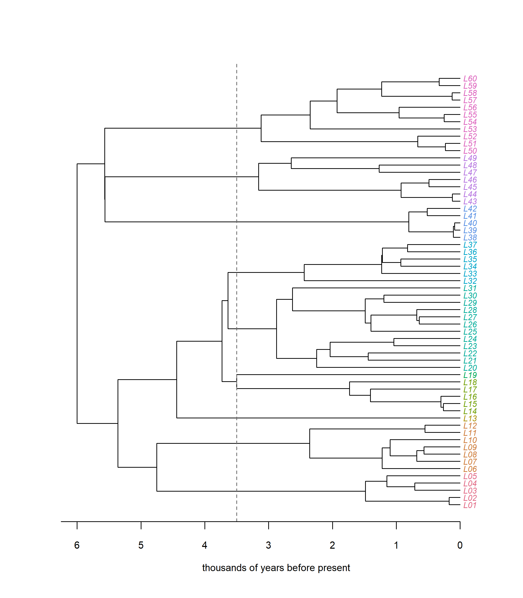
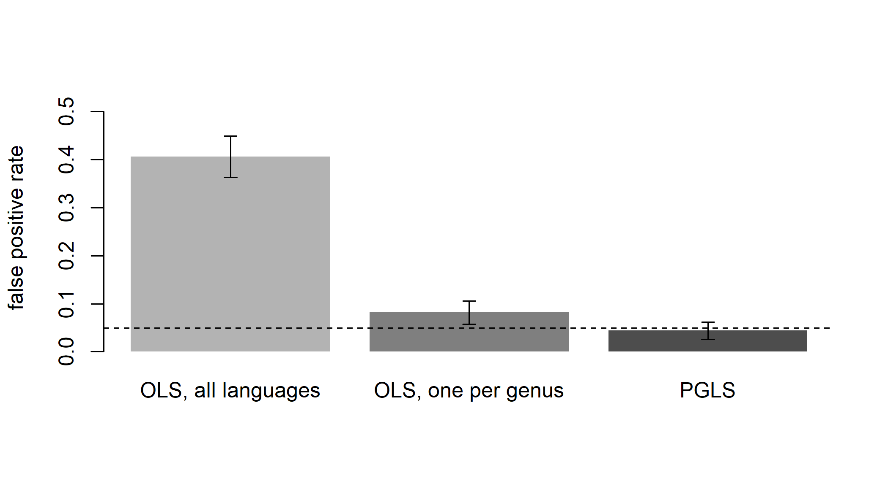
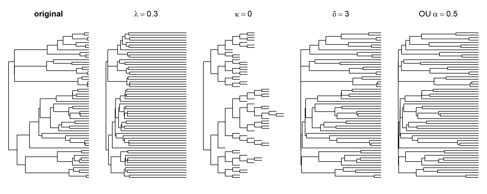
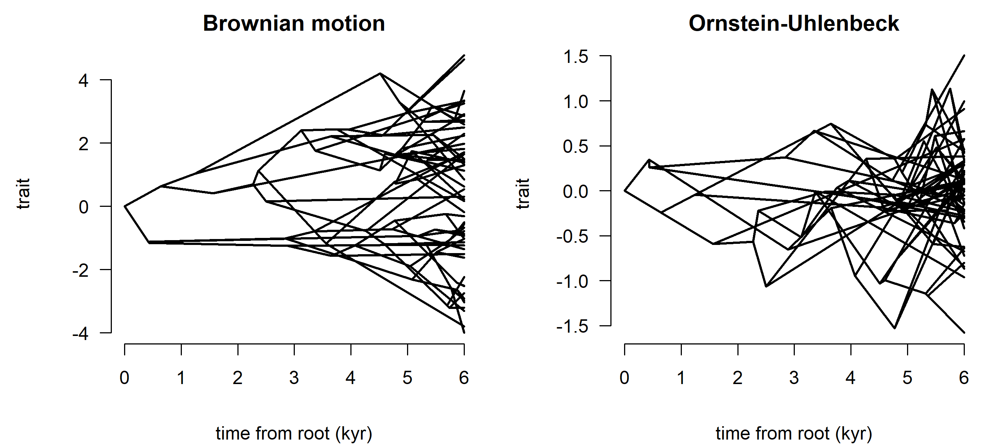
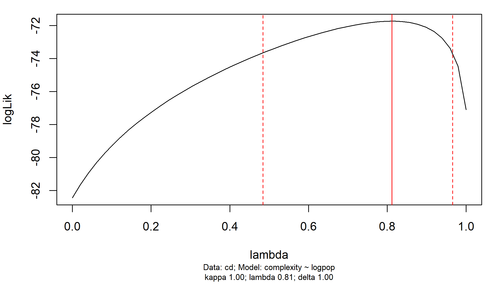
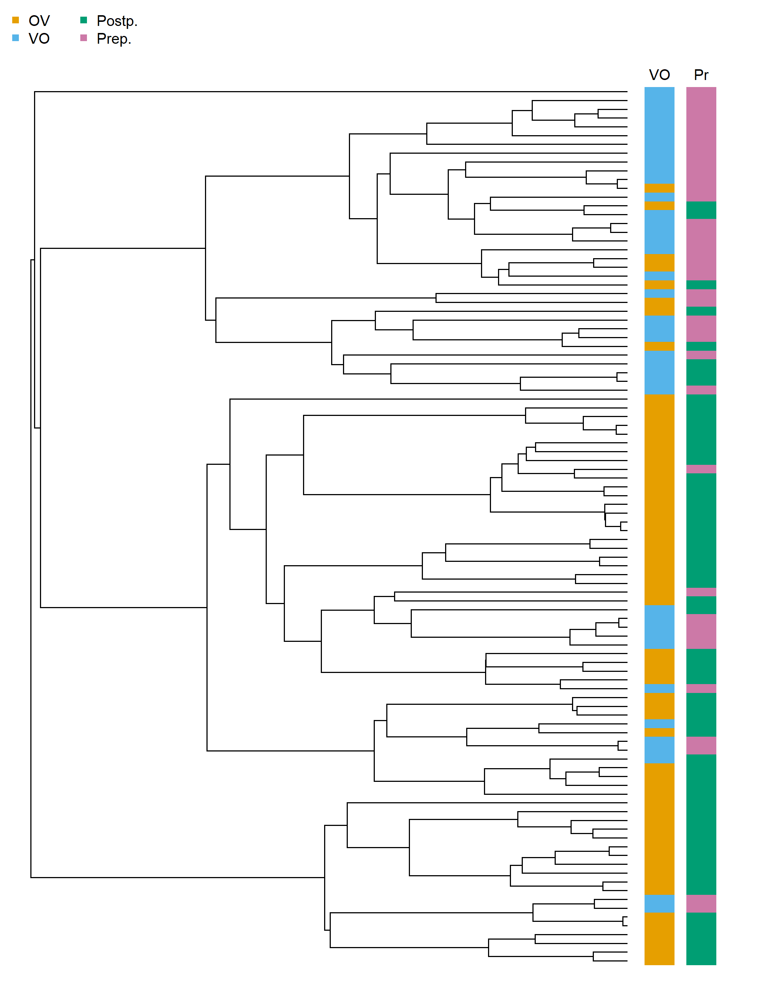
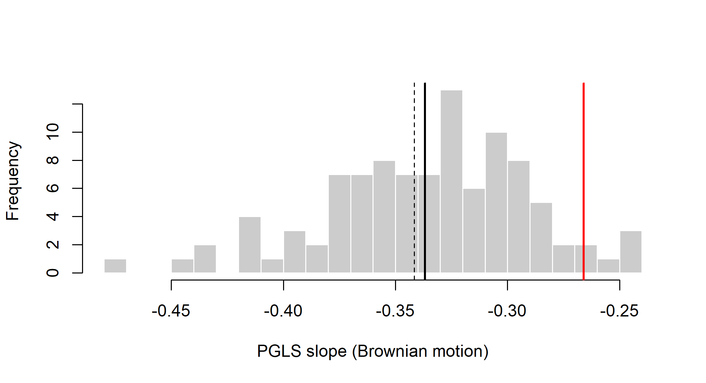

Chapter 13 Phylogenetic Comparative Methods in Linguistics
Linguistic typology has always been a comparative science. Its central questions are about patterns across languages. Do languages with object-verb order tend to have postpositions? Are tone languages more common in humid climates? Do languages spoken by large populations have simpler morphology? Every such question runs into the same obstacle. Languages are not independent data points, because they descend from common ancestors and borrow from their neighbors. Anthropologists have called this Galton’s problem since the 1880s. This chapter is about the statistical tools that biologists built to solve the same problem for species, phylogenetic comparative methods (PCMs), and about how to use them well in quantitative typology: how to design a language sample, which tree and which branch lengths to use, how to carry tree uncertainty into the results, and what a phylogenetically controlled association can and cannot say about causes.
After reading this chapter you should be able to:
- explain Galton’s problem, demonstrate by simulation why ordinary regression and contingency tests on related languages give inflated false positive rates, and say what genealogical sampling does and does not fix;
- design a language sample for a comparative question, and compute the effective number of independent observations that a sample provides under a phylogenetic model;
- describe the Brownian motion, Ornstein-Uhlenbeck and Pagel models of trait evolution, measure phylogenetic signal, and interpret the results as patterns rather than processes;
- fit and interpret phylogenetic regressions (PGLS, phylogenetic logistic regression, phylogenetic mixed models) and Pagel’s test for correlated evolution with standard R packages;
- assess the sensitivity of a result to branch lengths (including Glottolog topologies with arbitrary branch lengths) and to tree uncertainty, by repeating the analysis over a sample of trees and pooling the results;
- separate phylogenetic and spatial dependence, and state which confounders a phylogenetic control removes and which it leaves untouched;
- critically read the debates over word-order universals and over environmental and social effects on language structure.
suppressPackageStartupMessages({
library(ape) # trees, vcv(), pic(), corBrownian(), corPagel(), ace()
library(phytools) # pbtree(), fastBM(), phylosig(), fitPagel(), sim.Mk()
library(geiger) # fitContinuous(), rescale()
library(nlme) # gls()
library(caper) # comparative.data(), pgls(), phylo.d()
library(phylolm) # phylolm(), phyloglm(), rbinTrait()
})13.1 Why comparison needs phylogeny
13.1.1 The logic of cross-linguistic correlation
Typologists look for regularities in the distribution of structural features across the languages of the world. The most famous example is the set of word-order generalizations of Greenberg (1963). One of them is Universal 4: “With overwhelmingly greater than chance frequency, languages with normal SOV order are postpositional.” Later typologists, above all Dryer (1992), tested and refined these generalizations on much larger samples. The result was a list of word-order correlations: pairs of features whose values co-occur more often than chance. Languages with object-verb (OV) order, like Japanese, Turkish or Hindi, tend to have postpositions (Tokyo ni ‘Tokyo to’). They also tend to put genitives before nouns and relative clauses before the noun they modify. Languages with verb-object (VO) order, like English, Indonesian or Swahili, tend to have prepositions and postnominal relative clauses.
How should we test whether such a correlation is real? The simplest approach is to sample languages, tabulate the two features in a \(2 \times 2\) contingency table, and apply a \(\chi^2\) test or a logistic regression. For a continuous variable, such as the size of a phoneme inventory or the number of speakers, we would use an ordinary least-squares (OLS) regression. Every one of these tests assumes that the observations are independent and identically distributed. That is, knowing the value for one language tells us nothing extra about the value for another, beyond what the predictors already say.
For languages this assumption is false, and badly so. The Romance languages are verb-object and prepositional because Latin was (or more precisely, because late spoken Latin was). They did not each arrive at this combination independently. If we count French, Spanish, Portuguese, Italian, Romanian, Catalan and fifty Romance dialects as separate data points, we inflate our apparent sample size enormously. We are counting one historical event many times over. The same is true at deeper levels. Hundreds of Bantu languages share SVO order and prepositions from Proto-Bantu. Hundreds of Austronesian languages share a set of structural features from Proto-Austronesian or Proto-Malayo-Polynesian. Languages also influence each other through contact. The languages of the Balkans, of Mainland Southeast Asia, or of the Ethiopian highlands share structural features that cut across family boundaries. This two-fold dependence, through descent and through diffusion, is the central methodological problem of comparative typology.
13.1.2 Galton’s problem
The problem was first stated in anthropology, not linguistics. In 1888 Edward Tylor presented to the Royal Anthropological Institute a statistical study of the “adhesions” between customs across several hundred societies. He looked, for instance, at whether the custom of avoidance between a man and his mother-in-law co-occurred with particular rules of residence after marriage (Tylor 1889). Francis Galton, who chaired the meeting, raised an objection in the discussion. Many of the societies might have shared their customs by borrowing or by common descent, so they were not independent instances. Tylor’s “adhesions” might reflect history rather than any functional connection between customs. The objection became known as Galton’s problem. Naroll (1961) reviewed early solutions in anthropology, and the problem has shaped cross-cultural research ever since.
Galton’s problem has two faces. The first is statistical. Non-independent observations carry less information than independent ones, so standard errors computed under independence are too small and \(p\)-values are too optimistic. The second is inferential. Even a correctly estimated association may reflect a historical accident rather than a causal or functional link. If an ancestral language happened to have two features, and its many descendants retained both out of inertia, then the features will be associated across the descendants. Yet nothing about one feature need favor the other. Biologists know this second face well. A trait inherited from a common ancestor is called a homology, and a shared trait that arose independently is called a homoplasy or convergence. Only independent origins (convergent evolution) provide evidence that two traits are functionally linked.
Mace and Pagel (1994) brought the biological solution to anthropology in an influential paper in Current Anthropology. Their argument was simple. Comparative biologists had faced Galton’s problem for species and had developed methods to solve it by modeling evolution along a phylogeny. Anthropologists, and by extension linguists, could do the same, using language trees as estimates of the historical relationships among societies. This chapter is about those methods and how linguists have used them. Chapter 14 follows the same program into cultural evolution.
13.1.3 Sampling-based solutions in typology
Typologists recognized the problem long before they adopted phylogenetic methods. Their response was to design samples that reduce non-independence (Rijkhoff et al. 1993). Three strategies stand out.
The first is genealogical stratification. The idea is to sample at most one language per family, or per subgroup of a given age, so that no historical lineage is counted twice. Dryer (1989) made this operational with the notion of the genus: a group of languages whose relatedness is fairly obvious without systematic comparative analysis, with a time depth comparable to the subfamilies of Indo-European (Germanic, Romance, Slavic), perhaps 2,500 to 4,000 years. Dryer counted genera rather than languages. A genus was scored as having a feature if most of its languages had it. The genera were then grouped into large macroareas (Africa, Eurasia, Southeast Asia and Oceania, Australia and New Guinea, North America, South America). A correlation was accepted as a universal tendency only if it held in a majority of genera in every macroarea, or nearly every one (Dryer 1989, 1992). The macroarea criterion deals with the second source of non-independence behind Galton’s problem, contact, at a very coarse scale. It asks whether a pattern recurs in regions that have had little historical contact.
The second strategy is diversity sampling. Here the goal is to maximize the range of structural types represented, for instance by sampling in proportion to the internal diversity of families (Rijkhoff et al. 1993; Miestamo et al. 2016). This is useful for discovering what is possible, but less useful for testing correlations.
The third strategy, more recent, is to replace counting with modeling of the processes that produce the distribution. Maslova (2000) pointed out that the present-day distribution of types is a snapshot of a dynamic system. If languages change from type to type at certain rates, then the cross-linguistic frequency of a type reflects the stationary distribution of that process rather than a timeless preference. A universal is then a claim about transition rates, which is exactly what phylogenetic models of discrete characters estimate. Cysouw (2011) makes the link explicit. For a binary feature with change probabilities \(p_{AB}\) and \(p_{BA}\), the stable frequency of type A is \(p_{BA}/(p_{AB}+p_{BA})\), whatever the time unit. The converse does not hold: very different pairs of rates give the same stable frequency, so present-day frequencies alone cannot identify the rates. And reading the observed frequencies as stable frequencies assumes that the system has reached its stationary distribution; in a young family the observed frequencies may still reflect the ancestral state (a founder effect) rather than the stable state. Bickel (2011) and Bickel (2013) developed the Family Bias method. It asks whether families tend to be biased in the same direction, toward the same value of a feature, more often than chance. For large families the bias can be estimated directly from the daughter languages. For small families and isolates it is extrapolated from the large families. A distributional universal, on this view, is a consistent bias across families that diversify independently. The method is explicitly diachronic in spirit. It treats each family as an independent experiment in language change, while making no attempt to model the internal tree of each family.
A related approach uses mixed-effects models. Family and area are treated as random effects, which lets observations within the same family or area be correlated (Jaeger et al. 2011). This was an important step toward modeling dependence directly. But a random effect for “family” treats all languages in a family as equally related to each other. It cannot represent the fact that Spanish and Portuguese are much closer to each other than either is to Hindi. A phylogenetic model can.
Macklin-Cordes and Round (2022) make the link between the two traditions explicit. They argue that phylogenetic comparative methods address the same problem as balanced sampling, statistical non-independence due to genealogy, but whereas sampling can never achieve independence and discards most of the data, phylogenetic methods model the dependence and use all of it. Their paper introduces phylogenetic signal, typological averages that are sensitive to genealogy and the treatment of tree uncertainty for typologists, with a case study of the laminal contrast in Pama-Nyungan.
13.1.4 What a phylogeny adds
All sampling solutions throw away information. If we keep one language per genus, we discard every other language, and with it every within-genus change. Yet those changes are exactly the independent evolutionary events that tell us whether two traits evolve together. Suppose the change from OV to VO has happened twenty times within Indo-European alone. We would like to know whether the adposition order changed along with it. A one-language-per-genus sample cannot tell us. Stratified samples also depend on an arbitrary time threshold, and they treat relatedness as all-or-nothing: Germanic and Romance count as independent genera although they are related, only less closely than Spanish and Portuguese.
Phylogenetic comparative methods take the opposite approach. They keep all the languages and model the dependence explicitly. Relatedness is represented by a phylogeny with branch lengths, and trait evolution by a stochastic process running along the branches. The expected similarity between two languages then follows from how much history they share. Two languages that split 500 years ago are expected to be very similar. Two languages that split 6,000 years ago are expected to be much less so, and two languages from different families not at all (unless contact has intervened). The phylogeny thus works as a covariance structure. A regression or correlation test that uses it gives each language the weight its independent information deserves.
A simulation makes the point concrete. We generate a tree for 60 languages, scaled so that the root lies 6,000 years in the past, and let two continuous traits (say, the proportion of suffixing morphology and the mean word length in a corpus) evolve along it completely independently of each other. We then test for a correlation that, by construction, does not exist, 500 times over, and count how often each method declares a significant correlation at the 5% level. A valid test should do so about 5% of the time. In the vocabulary of Section 6.10, this checks the robustness under misspecification of OLS, whose assumption of independent languages the data violate; PGLS is applied to data simulated under its own assumptions.
set.seed(13)
tree <- pbtree(n = 60, scale = 6) # pure-birth tree, depth 6 (kyr)
tree$tip.label <- sprintf("L%02d", 1:60)
H <- nodeHeights(tree)
# assign every tip to the lineage that crosses a given time slice
cut_tree <- function(tree, height) {
H <- nodeHeights(tree)
crossing <- which(H[, 1] < height & H[, 2] >= height)
grp <- integer(Ntip(tree))
for (k in seq_along(crossing)) {
d <- getDescendants(tree, tree$edge[crossing[k], 2])
grp[d[d <= Ntip(tree)]] <- k
}
setNames(grp, tree$tip.label)
}
genus <- cut_tree(tree, height = 6 - 3.5) # 3.5 kyr before the present
n_genera <- length(unique(genus))
cols <- hcl.colors(n_genera, "Dark 3")
plot(tree, cex = 0.66, label.offset = 0.05, tip.color = cols[genus],
edge.width = 1.2)
abline(v = 6 - 3.5, lty = 2, col = "grey40")
axisPhylo(cex.axis = 0.8)
mtext("thousands of years before present", side = 1, line = 2.5, cex = 0.8)
Figure 13.1: A simulated family of 60 languages with a root age of 6,000 years. Colors mark the ‘genera’ obtained by cutting the tree 3,500 years before the present, a Dryer-style grouping used below for genealogically stratified sampling.
The tree in Figure 13.1 has 10 lineages crossing the 3,500-year line. These are our “genera”. We compare three procedures: an OLS regression on all 60 languages, an OLS regression on a stratified sample with one language per genus, and a phylogenetic generalized least squares (PGLS) regression that uses the tree’s covariance structure (Section 13.6). For speed, the PGLS fit is computed by “whitening” the data with the Cholesky factor of the inverse covariance matrix, which is exactly what PGLS does internally.
C <- vcv(tree) # BM covariance matrix
W <- chol(solve(C)) # whitening matrix: W'W = C^-1
one_per_genus <- tapply(seq_along(genus), genus, function(i) i[1])
nrep <- 500
pvals <- matrix(NA, nrep, 3, dimnames = list(NULL, c("OLS", "Genus", "PGLS")))
for (r in seq_len(nrep)) {
x <- fastBM(tree) # trait 1, Brownian motion
y <- fastBM(tree) # trait 2, independent of trait 1
g <- one_per_genus
pvals[r, "OLS"] <- summary(lm(y ~ x))$coefficients[2, 4]
pvals[r, "Genus"] <- summary(lm(y[g] ~ x[g]))$coefficients[2, 4]
Xw <- W %*% cbind(1, x); yw <- W %*% y # transformed (whitened) data
pvals[r, "PGLS"] <- summary(lm(yw ~ Xw - 1))$coefficients[2, 4]
}
fpr <- colMeans(pvals < 0.05)
round(fpr, 3)#> OLS Genus PGLS
#> 0.406 0.082 0.044ci <- sapply(fpr, function(p) p + c(-1, 1) * 1.96 * sqrt(p * (1 - p) / nrep))
bp <- barplot(fpr, ylim = c(0, max(ci) * 1.15),
col = c("grey70", "grey50", "grey30"),
names.arg = c("OLS, all languages", "OLS, one per genus", "PGLS"),
ylab = "false positive rate", border = NA)
arrows(bp, ci[1, ], bp, ci[2, ], angle = 90, code = 3, length = 0.05)
abline(h = 0.05, lty = 2)
Figure 13.2: Galton’s problem in a simulation. Two traits evolved independently by Brownian motion on the simulated 60-language tree. Bars show the proportion of 500 replicates in which each test reported a significant correlation at the 5% level, with 95% binomial intervals. The dashed line marks the nominal 5% rate.
The result (Figure 13.2) is stark. Ordinary regression on all languages finds a “significant” correlation between two unrelated traits in about 41% of replicates, roughly 8 times the nominal rate. Stratified sampling helps but does not fully solve the problem, with a false positive rate of about 8%: the genera are still related through the deeper part of the tree, and the sample is much smaller. PGLS keeps all the languages and achieves the nominal rate (4%). Nothing in the simulation is unusual. Pure-birth trees and Brownian motion are, if anything, a mild scenario compared with real language families, in which a single deep split, such as that between OV and VO branches, can create a strong association that rests on just one historical event.
Galton’s problem is just as acute for discrete features. Below, two binary features evolve independently on the same tree, each with a low rate of change, as typological features often do. For a symmetric two-state process with rate \(q\), a branch of length \(t\) ends in a different state from the one it started in with probability \(\tfrac{1}{2}(1 - e^{-2qt})\), so we visit the branches from the root toward the tips and flip the state with this probability. We then apply Fisher’s exact test to the \(2 \times 2\) table of the two features.
sim_binary <- function(tree, q) {
tree <- reorder(tree, "cladewise") # parents before children
state <- integer(Ntip(tree) + tree$Nnode)
state[Ntip(tree) + 1] <- rbinom(1, 1, 0.5) # root drawn from stationarity
p_flip <- 0.5 * (1 - exp(-2 * q * tree$edge.length))
flips <- rbinom(nrow(tree$edge), 1, p_flip)
for (e in seq_len(nrow(tree$edge)))
state[tree$edge[e, 2]] <- abs(state[tree$edge[e, 1]] - flips[e])
setNames(state[seq_len(Ntip(tree))], tree$tip.label)
}
p_fisher <- replicate(500, {
a <- sim_binary(tree, 0.15); b <- sim_binary(tree, 0.15)
if (length(unique(a)) < 2 || length(unique(b)) < 2) NA else
fisher.test(table(a, b))$p.value
})
fpr_discrete <- mean(p_fisher < 0.05, na.rm = TRUE)
fpr_discrete#> [1] 0.184Here too the naive test rejects the true null hypothesis of independence far more often than it should: in about 18% of replicates rather than 5%. The phylogenetic alternative, Pagel’s test for correlated evolution, is developed in Section 13.7.
Dryer’s genera and macroareas. Dryer (1992) tested several dozen putative word-order correlations on a database of some 625 languages grouped into genera and six macroareas. A pair of features counted as correlated only if the preferred combination was found in more genera than the dispreferred combination in each macroarea (or in all but one). The analysis confirmed some of Greenberg’s correlations, such as those involving adpositions, genitives and relative clauses, and rejected others. The most famous rejected case is adjective-noun order, which Greenberg had expected to correlate with verb-object order and which turned out not to. Dryer’s procedure was a pragmatic, transparent and remarkably successful answer to Galton’s problem. Its limitations are those discussed above. It counts each genus once, whatever its internal history. It treats the genus threshold as a sharp boundary. And it says nothing about the dynamics of change that produced the distribution. It nonetheless remains the benchmark against which phylogenetic results on word order are judged, and it played a central role in the debate that followed Dunn et al. (2011) (Section 13.8).
13.2 Designing a language sample
Phylogenetic methods do not make sampling irrelevant. They change what sampling is for. A sampling design for a comparative study should answer five questions before any data are coded.
- What is the target of inference? A claim about “the languages of the world” today, a claim about the possible languages, and a claim about the processes of change (a universal as a bias in transition rates; Section 13.1.3) call for different samples. For the first, the sampling frame is a list such as Glottolog (Hammarström et al. 2024); for the third, the unit of replication is the family or the independent change, not the language.
- How much independent information will the sample contain? Under a phylogenetic model the information in a sample is not its number of languages. A useful summary is the effective sample size for estimating a mean, \(n_{\text{eff}} = \mathbf{1}^\top \mathbf{R}^{-1}\mathbf{1}\), where \(\mathbf{R}\) is the phylogenetic correlation matrix (the covariance matrix \(\mathbf{C}\) of Section 13.3.1 scaled to unit diagonal). It equals the number of languages when they are independent and approaches the number of deep, independent lineages when languages cluster in shallow clades. For tests of association, what matters is the number of independent changes in the predictor, which can be smaller still.
- Does the predictor vary within families? An association estimated from a sample in which a predictor varies only between families rests on as many data points as there are families, whatever the number of languages. Variation within families is what lets a phylogenetic model see coupled change.
- How are languages, dialects and families delimited? Splitting one language into five dialects adds five tips to a shallow clade. PCMs down-weight them, but only to the extent that the tree represents their closeness correctly. Lumping varieties into one tip, or splitting them, changes \(\mathbf{C}\), and decisions should be made before seeing the results (Section 15.8).
- Which languages are missing, and why? Typological databases over-represent well-described languages, which are often larger, written, or spoken in regions with a long tradition of description. If documentation is related to the variables under study (population size and morphological complexity are a clear example), restricting the analysis to documented languages can create or mask associations (Section 13.11.4).
The code below makes point 2 concrete. It computes \(n_{\text{eff}}\) for random subsamples of the 60-language tree, under Brownian motion (\(\lambda = 1\)) and under a weaker phylogenetic dependence (\(\lambda = 0.5\); Section 13.3.4), and for the one-language-per-genus sample.
neff <- function(tr, lambda = 1) {
R <- cov2cor(vcv(tr)) # phylogenetic correlations
R <- lambda * R + (1 - lambda) * diag(nrow(R))
sum(solve(R)) # 1' R^-1 1
}
set.seed(14)
neff_tab <- t(sapply(c(5, 10, 20, 40, 60), function(k) {
v <- replicate(50, {
tr <- keep.tip(tree, sample(tree$tip.label, k))
c(neff(tr), neff(tr, 0.5)) })
c(languages = k, n_eff_BM = mean(v[1, ]), n_eff_lambda_0.5 = mean(v[2, ]))
}))
round(neff_tab, 1)#> languages n_eff_BM n_eff_lambda_0.5
#> [1,] 5 3.5 4.1
#> [2,] 10 4.8 6.3
#> [3,] 20 6.2 9.1
#> [4,] 40 6.8 11.2
#> [5,] 60 7.0 12.2genus_tree <- keep.tip(tree, tree$tip.label[one_per_genus])
c(genera = n_genera, n_eff_genera = round(neff(genus_tree), 1))#> genera n_eff_genera
#> 10.0 5.8Under Brownian motion, sixty languages from this family are worth about seven independent observations of the family mean, and most of that value is already reached with twenty languages. The one-per-genus sample is worth less than its number of genera, because the genera are themselves related. With weaker dependence the value of extra languages is greater. Real families are more unbalanced than this pure-birth tree, and a global sample is a forest of families of very different sizes, so it is worth computing \(n_{\text{eff}}\) for the actual sample and tree before an analysis. Two practical consequences follow. Adding languages from an already well-sampled clade buys little; adding families or isolates buys a lot, even though each contributes little information about rates of change within lineages. For estimating rates, the balance tips the other way: following Maslova (2000), Cysouw (2011) suggests that a 100-language sample built as pairs of closely related languages from 50 groups, or as about ten densely sampled groups, says more about change than 100 languages from different genealogical units. And reporting results family by family alongside pooled results shows whether a global association is carried by a few large families.
Modeling dependence also relaxes the classical demand for a balanced, probability-based sample. Guzmán Naranjo and Becker (2022) combined a phylogenetic regression term with a two-dimensional Gaussian process for areal effects and argued that, with both controls in the model, strict probability sampling is not required, provided the sample is a variety sample large enough to cover different families and areas. Their test case is instructive: an apparent effect of VO order on the choice between prefixing and suffixing disappeared once genealogical and areal effects were both controlled, and the areal effects were as important as the genealogical ones. The design questions above do not go away, but they shift from “which languages may I include?” to “how much independent information about my question does this sample contain, and where does it come from?”
13.3 Models of trait evolution
Every phylogenetic comparative method rests on a model of how traits change along the branches of a tree. For discrete characters the standard models are the continuous-time Markov chains (CTMCs) introduced in Chapter 5 and developed for cognate data in Chapter 7. For continuous characters the workhorse is Brownian motion and its relatives. Continuous characters are less common in linguistics than in biology, but far from rare. Examples include phoneme inventory size, the ratio of consonants to vowels, mean word length, measures of morphological synthesis or fusion, entropy-based measures of word-order freedom, lexical rates of change, and even latitude and longitude (Chapter 11). Many discrete features can also be modeled as continuous liabilities that cross a threshold (Section 13.9.3).
13.3.1 Brownian motion
Brownian motion (BM) is a random walk in continuous time. Let \(X(t)\) be the value of a trait at time \(t\). Under BM, the change over any short interval \(dt\) is normally distributed with mean zero and variance \(\sigma^2\,dt\):
\[\begin{equation} X(t + dt) - X(t) \sim \mathcal{N}(0, \sigma^2\, dt), \tag{13.1} \end{equation}\]
and changes over non-overlapping intervals are independent. The parameter \(\sigma^2\) is the evolutionary rate. Over a branch of length \(t\), the change is \(\mathcal{N}(0, \sigma^2 t)\). The process has no tendency to return to any particular value. It simply diffuses, so the variance among independent lineages grows linearly with time.
BM is often described as a model of “neutral drift”, and for genetic drift in quantitative traits it can be derived from population genetics. But its usefulness does not depend on that interpretation. BM also arises when a trait is pushed around by many small, independent influences whose direction varies randomly over time: shifting social preferences, contact with changing neighbors, analogical leveling here and sound change there. It is the natural null model for “change happens, but in no particular direction.”
Now place BM on a tree. Each lineage inherits its ancestor’s value at the moment of splitting and then wanders independently. Two languages \(i\) and \(j\) share the path from the root to their most recent common ancestor. Along that shared path, they have experienced the same changes. After the split, their changes are independent. Hence the covariance between their trait values equals \(\sigma^2\) times the length of the shared path, \(s_{ij}\). The variance of a single language equals \(\sigma^2\) times its distance from the root, \(T_i\). Collecting these into a matrix, the vector of tip values \(\mathbf{x} = (x_1, \dots, x_n)^\top\) is multivariate normal:
\[\begin{equation} \mathbf{x} \sim \mathcal{N}_n\!\left(\mu \mathbf{1},\; \sigma^2 \mathbf{C}\right), \qquad C_{ij} = s_{ij}, \quad C_{ii} = T_i, \tag{13.2} \end{equation}\]
where \(\mu\) is the value at the root and \(\mathbf{1}\) is a vector of ones. The matrix \(\mathbf{C}\) is the phylogenetic variance-covariance matrix. It is the single most important object in this chapter. Everything a Gaussian PCM knows about the tree is contained in it. In R, ape::vcv() computes it. For a four-language tree in which A and B split 1,000 years ago, C and D 2,000 years ago, and the two pairs 3,000 years ago:
#> A B C D
#> A 3 2 0 0
#> B 2 3 0 0
#> C 0 0 3 1
#> D 0 0 1 3Read the matrix row by row. A and B share 2 units of history (the branch from the root to their ancestor), so their covariance is 2. A and C share nothing, so their covariance is 0. Each tip has variance 3, the full depth of the tree. The maximum-likelihood estimate of the root value \(\mu\) is then a weighted mean of the tip values, and it is also the ML estimate of the ancestral state at the root (Chapter 12). It down-weights clusters of closely related languages, since they carry largely redundant information: a family with 400 Bantu languages and a single isolate does not get a root estimate that is 400/401 Bantu.
13.3.2 The Ornstein-Uhlenbeck process
Brownian motion lets a trait wander without bound. Many linguistic quantities, however, plausibly stay within a range. Phoneme inventories rarely shrink below about a dozen segments or grow beyond about a hundred. The proportion of a lexicon that is borrowed is bounded by 0 and 1. The Ornstein-Uhlenbeck (OU) process adds a deterministic pull toward an optimum, or attractor, \(\theta\):
\[\begin{equation} dX(t) = \alpha\,[\theta - X(t)]\,dt + \sigma\, dW(t), \tag{13.3} \end{equation}\]
where \(dW(t)\) is the increment of a standard Brownian motion and \(\alpha \ge 0\) is the strength of the pull. When \(\alpha = 0\), OU reduces to BM. When \(\alpha > 0\), the trait fluctuates around \(\theta\) with stationary variance \(\sigma^2/(2\alpha)\). The phylogenetic half-life, \(t_{1/2} = \ln 2/\alpha\), is the expected time for a lineage to move halfway from its ancestral value toward the optimum. Comparing \(t_{1/2}\) with the depth of the tree tells us whether the pull is weak (half-life longer than the tree) or strong (half-life much shorter, in which case the phylogeny barely matters). Under OU, the covariance between two languages decays exponentially with the time separating them, rather than linearly as under BM. OU was introduced to comparative biology by Hansen (1997) as a model of stabilizing selection toward an adaptive optimum. Butler and King (2004) extended it to multiple optima on different parts of the tree, for example one optimum for languages in one ecological or social setting and another for languages in a different setting. Such multi-optimum models are a natural way to formalize hypotheses that a feature is “adapted” to some environment. A linguistic version might specify one optimum for languages of large, open societies and another for languages of small, close-knit ones.
The OU covariance between two tips, Equation (D.12), and the early-burst covariance, Equation (D.13), are in Section D.3.2.
OU models are easy to fit and easy to over-interpret. With small trees, likelihood-ratio tests favor OU over BM much more often than they should. Measurement error, or a few unusual languages, can also mimic an OU process. And the “stabilizing selection” reading of \(\alpha\) is only one of several processes that produce the same pattern (Cooper et al. 2016; Ho and Ané 2014b). For trees of a few dozen languages, \(\alpha\) and \(\sigma^2\) are often weakly identifiable. Report the half-life with its uncertainty, check the result by simulation, and avoid talking about “selection” unless there is independent reason to.
13.3.3 Early burst and related models
The early burst (EB) model, also called ACDC (accelerating-decelerating), lets the rate of BM change exponentially through time: \(\sigma^2(t) = \sigma_0^2\, e^{r t}\). With \(r < 0\), change is fast early in the history of the clade and slows down later. This is the signature expected under adaptive radiation, when a lineage enters new ecological space and its descendants quickly diversify into vacant niches (Blomberg et al. 2003; Harmon et al. 2010).
Linguistic analogues are easy to imagine. A language family expanding into a new and diverse landscape, such as Austronesian into the Pacific or Bantu across sub-Saharan Africa, might diversify structurally faster in its early phases than later. Punctuational bursts of lexical change at language splits (Atkinson et al. 2008), discussed in Chapter 9, are a different phenomenon, linked to splitting events rather than to clade age, but they raise the same general question: is the rate of change constant through time? In biology, Harmon et al. (2010) found that early bursts are actually rare in comparative data on body size and shape. That result is a useful warning against assuming them.
13.3.4 Pagel’s tree transformations: lambda, kappa and delta
Pagel (1997) and Pagel (1999a) introduced three transformations of the tree, or equivalently of \(\mathbf{C}\). They are a flexible way to test how well BM on the given tree describes the data. Each transformation is controlled by a single parameter, and each has a natural interpretation.
Lambda (\(\lambda\)) multiplies all off-diagonal elements of \(\mathbf{C}\) by \(\lambda\) and leaves the diagonal unchanged:
\[\begin{equation} \mathbf{C}(\lambda) = \lambda\,\mathbf{C} + (1 - \lambda)\,\operatorname{diag}(\mathbf{C}). \tag{13.4} \end{equation}\]
When \(\lambda = 1\) we have pure BM on the original tree. When \(\lambda = 0\) the tree becomes a “star” in which all languages are independent. Intermediate values shrink the internal branches relative to the terminal ones. Lambda is the most widely used measure of phylogenetic signal (Section 13.4). Note that \(\lambda\) can exceed 1 slightly, up to the value at which \(\mathbf{C}(\lambda)\) ceases to be a valid covariance matrix. Most software restricts it to \([0, 1]\).
Kappa (\(\kappa\)) raises every branch length to the power \(\kappa\). When \(\kappa = 1\) the tree is unchanged. When \(\kappa = 0\) all branches have equal length, so change is proportional to the number of splits rather than to time. This is a model of punctuational or speciational change, in which evolution is concentrated at splitting events, and so bears directly on the punctuational bursts of lexical change mentioned in Section 13.3.3.
Delta (\(\delta\)) raises the node heights (the distances from the root) to the power \(\delta\). With \(\delta < 1\), the deep parts of the tree are stretched relative to the shallow parts: change is concentrated early, as in an early burst. With \(\delta > 1\), change is concentrated toward the tips, as expected under accelerating evolution or for traits that evolve fast and lose their deep phylogenetic signal.
These transformations matter twice over for linguists. As models, they describe how a trait evolved. As tools, they let the data adjust branch lengths that were chosen arbitrarily, which is how they are often used with Glottolog-based trees (Section 13.12.2). Figure 13.3 shows the effect of each transformation on the tree from Figure 13.1, using geiger::rescale().
# cex = 1 keeps full-size titles despite five panels
op <- par(mfrow = c(1, 5), mar = c(1, 0.5, 2.5, 0.5), cex = 1)
plot(tree, show.tip.label = FALSE, main = "original", cex.main = 0.9)
plot(rescale(tree, "lambda", 0.3), show.tip.label = FALSE,
main = expression(lambda == 0.3), cex.main = 0.9)
plot(rescale(tree, "kappa", 0), show.tip.label = FALSE,
main = expression(kappa == 0), cex.main = 0.9)
plot(rescale(tree, "delta", 3), show.tip.label = FALSE,
main = expression(delta == 3), cex.main = 0.9)
plot(rescale(tree, "OU", alpha = 0.5), show.tip.label = FALSE,
main = expression(OU ~ alpha == 0.5), cex.main = 0.9)
Figure 13.3: Pagel’s branch-length transformations applied to the simulated language tree. From left to right: the original tree; lambda = 0.3 (internal branches shortened); kappa = 0 (all branches equal, a speciational model); delta = 3 (change concentrated near the tips); and an Ornstein-Uhlenbeck transformation with alpha = 0.5.
A traitgram, or phenogram, plots the tree with the trait value on the vertical axis and time on the horizontal axis. It is a good way to see the difference between BM and OU. Under BM, lineages fan out, and their spread grows with time. Under OU with a strong pull, they stay within a band around the optimum, and the spread barely depends on how long ago two languages split (Figure 13.4).
set.seed(21)
x_bm <- fastBM(tree, sig2 = 1, internal = TRUE)
x_ou <- fastBM(tree, sig2 = 1, alpha = 1.5, theta = 0, internal = TRUE)
# horizontal tick labels, so that none is dropped for lack of room
op <- par(mfrow = c(1, 2), mar = c(4.5, 5, 2, 1), las = 1, mgp = c(3.5, 1, 0))
phenogram(tree, x_bm, ftype = "off", spread.labels = FALSE,
xlab = "time from root (kyr)", ylab = "trait",
main = "Brownian motion")
phenogram(tree, x_ou, ftype = "off", spread.labels = FALSE,
xlab = "time from root (kyr)", ylab = "trait",
main = "Ornstein-Uhlenbeck")
Figure 13.4: Traitgrams of a continuous trait simulated on the same tree under Brownian motion (left) and an Ornstein-Uhlenbeck process with a strong pull toward an optimum of zero (right; alpha = 1.5, half-life about 0.46 thousand years). Internal node values are the simulated ancestral values.
13.3.5 Fitting and comparing models
All of these models can be fitted by maximum likelihood and compared with information criteria such as AIC or its small-sample correction AICc (Chapter 5). The function geiger::fitContinuous() (Pennell et al. 2014) fits BM, OU, EB, lambda, kappa, delta and a “white noise” model in which languages are independent draws from a single normal distribution. Below we fit five models to the BM and OU traits just simulated.
fit_models <- function(x) {
models <- c("BM", "OU", "EB", "lambda", "white")
sapply(models, function(m)
fitContinuous(tree, x, model = m, control = list(niter = 10))$opt$aicc)
}
tips <- tree$tip.label
aicc <- rbind(BM_trait = fit_models(x_bm[tips]),
OU_trait = fit_models(x_ou[tips]))
delta_aicc <- t(apply(aicc, 1, function(a) a - min(a)))
knitr::kable(round(delta_aicc, 1),
caption = "Differences in AICc from the best model (0 = best) for traits simulated under Brownian motion and under an Ornstein-Uhlenbeck process.")| BM | OU | EB | lambda | white | |
|---|---|---|---|---|---|
| BM_trait | 0.0 | 2.1 | 2.2 | 2.2 | 64.3 |
| OU_trait | 18.2 | 0.0 | 20.4 | 6.3 | 4.2 |
With 60 tips, the model comparison usually recovers the generating process. You will find, though, that it is quite easy to construct cases where it does not. Re-running the simulation with different seeds is instructive. Model selection among continuous models is a good exploratory tool. It is a weak basis for strong claims about evolutionary mechanism.
13.3.6 Discrete characters
Most typological features are discrete. Word order is OV or VO. A language has or lacks tone, grammatical gender, a dual number or a definite article. As in previous chapters, such characters are modeled by a CTMC with rate matrix \(\mathbf{Q}\): the Mk model of Lewis (2001) and its equal-rates (ER), symmetric (SYM), all-rates-different (ARD) and ordered variants, which Chapter 12 uses for ancestral state reconstruction (Section 12.4.1). Here they serve as the building blocks of Pagel’s test for correlated evolution (Section 13.7). One feature of the Mk model matters for comparative analysis. Its equilibrium frequencies, the stationary distribution \(\pi\) of \(\mathbf{Q}\), are what the “preferences” of typology look like in a dynamic view (Maslova 2000). A strongly preferred type is a type that languages change into readily and out of reluctantly.
13.4 Phylogenetic signal
Phylogenetic signal is the tendency of related languages to resemble each other more than languages drawn at random from the same tree (Blomberg et al. 2003; Münkemüller et al. 2012). It is the first thing to measure in any comparative analysis. It tells us how strongly Galton’s problem affects a feature, and so whether phylogenetic correction matters. It is also of interest in its own right. Features with strong signal are stable, inherited properties of lineages. Features with weak signal are labile, easily borrowed or easily innovated. The stability of linguistic features, which typologists have long discussed (Wichmann and Holman 2009b; Dediu and Cysouw 2013), is closely related to phylogenetic signal. The two are not the same thing, though, as we will see.
13.4.1 Pagel’s lambda
The most common measure of signal for continuous traits is Pagel’s \(\lambda\) (Equation (13.4)), estimated by maximum likelihood. A value near 1 means that the trait covaries among languages as expected under BM on the tree. A value near 0 means that the tree tells us nothing about trait similarity. A likelihood-ratio test of \(\lambda = 0\) against the ML value tests for the presence of signal. A test of \(\lambda = 1\) tests for departure from BM.
13.4.2 Blomberg’s K, Moran’s I and the D statistic
Blomberg et al. (2003) proposed the statistic \(K\), which compares how much of a trait’s variance lies between clades rather than within them with the amount expected under BM on the tree. \(K = 1\) is the BM expectation. \(K < 1\) means that relatives resemble each other less than expected under BM; \(K > 1\) means that they resemble each other more. Significance is assessed by permuting trait values across the tips. In biology, Blomberg et al. (2003) famously found that behavioral traits have lower \(K\) than morphological ones, being “more labile”. The analogous claim in linguistics, that some kinds of structure are more stable than others, is explored below.
Moran’s I (Moran 1950), borrowed from spatial statistics, measures autocorrelation with respect to a matrix of weights. Gittleman and Kot (1990) proposed using phylogenetic proximity as the weights. Moran’s I has the advantage that the same statistic can be computed with geographic weights, which makes it convenient for comparing phylogenetic and spatial autocorrelation of a feature. It is not tied to an explicit model of evolution, though, and it depends on the choice of weights.
For binary features, Fritz and Purvis (2010) proposed the statistic \(D\), which compares the observed differences between sister clades with their distribution under random reshuffling of the trait and under a threshold model in which the binary trait arises from a Brownian liability. \(D \approx 1\) indicates a random (phylogenetically unstructured) distribution, \(D \approx 0\) a distribution as clumped as expected under the Brownian threshold model, and \(D < 0\) an even more clumped one. It is implemented as caper::phylo.d().
13.4.3 Signal in R
The code below estimates \(\lambda\) and \(K\) for the BM trait simulated above, and for a “trait” that is pure noise.
noise <- setNames(rnorm(Ntip(tree)), tips)
lam <- function(v) phylosig(tree, v, method = "lambda", test = TRUE)$lambda
sig <- rbind(
BM = c(lambda = lam(x_bm[tips]),
K = phylosig(tree, x_bm[tips], method = "K")),
noise = c(lambda = lam(noise), K = phylosig(tree, noise, method = "K")))
round(sig, 3)#> lambda K
#> BM 1.012 0.953
#> noise 0.095 0.114#> [1] 0.001001#> [1] 0.6557The BM trait has \(\lambda\) close to 1 and \(K\) close to or above 1, and the noise trait has values near 0.
Phylogenetic signal is a pattern, not a process. Revell et al. (2008) showed by simulation that high signal can arise under processes with high or low rates, and that low signal can arise from a strong pull toward an optimum (OU), from fast evolution, or from measurement error. “This feature has high \(\lambda\), so it evolves slowly” does not follow. Under BM, \(\lambda\) is 1 whatever the rate. Stability, in the sense of a low rate of change per unit time, is better estimated directly as a rate parameter in a CTMC or BM model on a dated tree (Dediu 2011; Greenhill et al. 2017). And signal estimated on a tree with arbitrary branch lengths (Section 13.12.2) depends on those branch lengths.
13.4.4 Phylogenetic signal in linguistic features
How strong is phylogenetic signal in grammatical features? This question goes back to old debates about “stability” in typology, and phylogenetic methods have given new answers. Wichmann and Holman (2009b) proposed a stability metric computed from WALS (Dryer and Haspelmath 2013), and Dediu and Cysouw (2013) compared it with six other stability estimates, most of them non-phylogenetic but including the Bayesian phylogenetic rates of Dediu (2011). The methods agree only partially, although some features come out as consistently stable and others as consistently unstable across methods.
Dediu (2011): stability of linguistic features on language trees. Dediu (2011) used Bayesian phylogenetic methods to estimate rates of change for WALS features on samples of trees for a number of language families. He treated the estimated rate of change as a measure of instability and, by integrating over tree uncertainty, obtained a ranking of features by stability. He then used the estimates to revisit an earlier hypothesis linking the distribution of tone to population frequencies of particular alleles of two brain-related genes (Dediu and Ladd 2007). The analysis is a good example of a common design: a large set of typological features analyzed one at a time on samples of trees for several families. It also shows a characteristic limitation. Many families contribute little variation for many features, and the trees themselves are uncertain, so the per-feature estimates are noisy.
The largest analysis to date is the Grambank study of Skirgård and colleagues (Skirgård et al. 2023), whose Bayesian spatiophylogenetic models (Section 13.10) decompose the variance of each feature into a phylogenetic and a spatial component. Inheritance from ancestors explained more of the present-day distribution of grammatical features than proximity to neighbors did, although the strength of the phylogenetic effect varied considerably between features and the spatial effect was, on average, small (Section 13.8.4).
Greenhill et al. (2017) took a different approach. They estimated rates of change for structural (grammatical) features and for basic vocabulary on the same Austronesian trees. Contrary to a widespread expectation, grammatical features were not more stable than vocabulary: on average, most grammatical features changed faster than items of basic vocabulary, although both kinds of data showed a wide range of rates and each contained a core of highly stable features. Both rates and signal, then, are properties of individual features, not of “grammar” or “lexicon” as a whole. Other studies point the same way. Dediu and Levinson (2012) estimated stability profiles of structural features within several families and found both tendencies shared across families and family-specific ones. Hübler (2022), defining stability as high phylogenetic signal combined with a low rate of change, measured both for 171 structural features in Japonic, Koreanic, Mongolic, Tungusic and Turkic languages; signal and rate were correlated, and features of argument marking, derivation and valency came out among the most stable. Wichmann (2015) reviews the older and newer approaches to stability in typology. Chapter 9 discusses rates of change in more detail.
13.5 Phylogenetically independent contrasts
The first general solution to Galton’s problem for continuous traits was Felsenstein’s method of phylogenetically independent contrasts [PIC; Felsenstein (1985b)]. It is still the most intuitive. The insight is that although the trait values of languages are not independent, the differences between sister lineages are. Under BM, the change from the ancestor of Spanish and Portuguese to Spanish is independent of the change from that ancestor to Portuguese. It is also independent of every change elsewhere in the tree. So the difference between Spanish and Portuguese is an independent evolutionary “experiment”. So is the difference between French and Italian, and so is the difference between the ancestor of the Ibero-Romance languages and the ancestor of French and Italian, once suitably estimated.
The algorithm works from the tips toward the root, computing a difference between each pair of sister lineages, standardized by the square root of the branch lengths that separate them, and replacing each pair by an estimated ancestral value. A tree with \(n\) tips yields \(n - 1\) contrasts, which are independent and identically distributed with mean zero under BM. To test for correlated evolution of two traits, we compute contrasts for each and regress the contrasts of \(y\) on those of \(x\) through the origin. There is no intercept because the sign of each contrast is arbitrary.
PIC was revolutionary because it turned a problem with unknown dependencies into a standard regression on independent data. It was quickly adopted in biology (Harvey and Pagel 1991; Garland et al. 1992). It has two limitations. It assumes BM (although branch lengths can be transformed first). And it is awkward to extend to multiple predictors, categorical predictors or non-normal data. Both limitations are removed by PGLS, of which PIC is a special case.
The contrast algorithm step by step, Equation (D.17), and a numerical check that the contrast slope equals the PGLS slope under BM, are in Section D.3.4.
set.seed(31)
x <- fastBM(tree)
y <- 2 + 0.6 * x + fastBM(tree, sig2 = 0.5) # true slope 0.6
u_x <- pic(x, tree); u_y <- pic(y, tree)
fit_pic <- lm(u_y ~ u_x - 1) # regression through origin
coef(summary(fit_pic))#> Estimate Std. Error t value Pr(>|t|)
#> u_x 0.6405 0.1079 5.937 1.729e-0713.6 Phylogenetic generalized least squares
13.6.1 The model
Phylogenetic generalized least squares (PGLS) is ordinary linear regression with a non-diagonal residual covariance matrix (Grafen 1989; Martins and Hansen 1997). The model is
\[\begin{equation} \mathbf{y} = \mathbf{X}\boldsymbol\beta + \boldsymbol\varepsilon, \qquad \boldsymbol\varepsilon \sim \mathcal{N}_n(\mathbf{0}, \sigma^2 \mathbf{V}), \tag{13.5} \end{equation}\]
where \(\mathbf{y}\) is the response for \(n\) languages, \(\mathbf{X}\) is the \(n \times p\) design matrix (a column of ones and the predictors), and \(\mathbf{V}\) is a phylogenetic correlation structure. Under BM, \(\mathbf{V} = \mathbf{C}\). Under Pagel’s lambda model, \(\mathbf{V} = \mathbf{C}(\lambda)\). Under OU, \(\mathbf{V}\) has the OU covariance. The coefficients are estimated by generalized least squares, which is equivalent to transforming (“whitening”) the data so that the transformed residuals are independent with equal variance, and then running ordinary least squares on the transformed data. This is exactly what we did in the Galton simulation. Independent contrasts are one particular whitening transformation, which is why the PIC slope through the origin is identical to the PGLS slope under BM (Rohlf 2001; Blomberg et al. 2012).
The GLS estimator and its variance, Equations (D.18) and (D.19), the whitening transformation, Equation (D.20), and the profile likelihood of \(\lambda\), Equation (D.21), are in Section D.3.5; the general theory of GLS is in Section A.11.
A few points about Equation (13.5) are worth stressing, because they are often misunderstood.
- The phylogenetic structure is in the residuals, not in the variables (Revell 2010). A strongly inherited predictor does not by itself call for PGLS. If the predictor explains all the phylogenetic structure in the response, the residuals may show no signal, and estimating \(\lambda\) jointly with the regression will reveal this (Section 13.6.2). Conversely, testing the response for signal and skipping PGLS if none is found is bad practice.
- The predictors are treated as fixed and measured without error, as in any regression. Error in the predictor (for example, poorly estimated speaker numbers) biases the slope toward zero.
- The intercept is the estimated value at the root of the tree for a language with all predictors equal to zero. It is not the mean of the sample.
- PGLS handles any number of continuous or categorical predictors and their interactions, exactly as in ordinary regression. The only change is \(\mathbf{V}\).
13.6.2 Estimating lambda jointly
In practice we rarely know how strong the phylogenetic dependence of the residuals is. The standard solution is to estimate Pagel’s \(\lambda\) jointly with \(\boldsymbol\beta\) and \(\sigma^2\) by maximum likelihood, with \(\mathbf{V} = \mathbf{C}(\lambda)\) (Freckleton et al. 2002). For each value of \(\lambda\) the regression coefficients have a closed form, so the likelihood can be maximized over \(\lambda\) alone, which is fast. The estimated \(\lambda\) then tells us where the analysis sits between OLS (\(\lambda = 0\)) and PGLS under BM (\(\lambda = 1\)). Its confidence interval tells us how well the data pin this down. With a few dozen languages, the interval is often wide.
13.6.3 PGLS in R
There are three common routes to PGLS in R. The nlme::gls() function (Pinheiro and Bates 2000) accepts correlation structures from ape such as corBrownian(), corPagel() and corMartins() (an OU structure). The caper package (Orme et al. 2013) provides pgls(), which estimates \(\lambda\), \(\kappa\) and \(\delta\) and offers profile plots and diagnostics. The phylolm package (Ho and Ané 2014a) fits the same models with a linear-time algorithm, which matters for trees with thousands of tips such as global language phylogenies.
We simulate a scenario of the kind discussed in Section 13.11. A predictor, logpop, stands in for the logarithm of speaker population. A response, complexity, stands in for an index of morphological complexity. Their relationship has a true slope of \(-0.3\), and the residual variation has phylogenetic signal \(\lambda = 0.7\). Both variables are inherited. Population size, too, has a history: languages of a large, expanding branch tend to be large.
set.seed(43)
logpop <- fastBM(tree, sig2 = 0.4) + 9
resid <- fastBM(rescale(tree, "lambda", 0.7), sig2 = 0.15)
complexity <- 5 - 0.3 * logpop + resid
langs <- data.frame(lang = tips, logpop = logpop[tips],
complexity = complexity[tips], row.names = tips)
head(langs, 4)#> lang logpop complexity
#> L01 L01 7.750 1.556
#> L02 L02 7.913 2.066
#> L03 L03 7.399 1.435
#> L04 L04 6.747 2.269First, the three models fitted with nlme::gls(): OLS (via gls() without a correlation structure), PGLS under BM, and PGLS with \(\lambda\) estimated.
m_ols <- gls(complexity ~ logpop, data = langs, method = "ML")
m_bm <- gls(complexity ~ logpop, data = langs, method = "ML",
correlation = corBrownian(1, phy = tree, form = ~lang))
m_lam <- gls(complexity ~ logpop, data = langs, method = "ML",
correlation = corPagel(0.5, phy = tree, form = ~lang))
tab <- t(sapply(list(OLS = m_ols, BM = m_bm, lambda = m_lam), function(m)
c(summary(m)$tTable["logpop", c("Value", "Std.Error", "p-value")],
AIC = AIC(m))))
lambda_hat <- coef(m_lam$modelStruct$corStruct, unconstrained = FALSE)
knitr::kable(tab, digits = 3,
caption = "Slope of complexity on log population under OLS, PGLS with Brownian motion, and PGLS with Pagel's lambda estimated by maximum likelihood (simulated data; true slope -0.3, true lambda 0.7).")| Value | Std.Error | p-value | AIC | |
|---|---|---|---|---|
| OLS | -0.125 | 0.084 | 0.140 | 170.9 |
| BM | -0.342 | 0.141 | 0.018 | 160.2 |
| lambda | -0.262 | 0.127 | 0.044 | 151.5 |
The estimated \(\lambda\) is 0.81, close to the true value of 0.7, and the lambda model is clearly preferred by AIC. Notice what happens to the slope. In this replicate OLS gives an estimate of -0.13 with \(p =\) 0.14. The real effect is masked by the phylogenetically structured noise, because a few large clades happen to have residuals that run against the trend. The lambda model, which down-weights redundant information from those clades, recovers a slope of -0.26 with \(p =\) 0.044. This is a useful corrective to a common belief. Phylogenetic correction is often thought of as a conservative procedure that can only remove “significant” results. In fact, it makes estimates more efficient as well as more honest, and it can reveal an effect that OLS misses as easily as it can remove a spurious one. Which estimate is closest to the truth in a single replicate is partly a matter of luck. What is not luck is that OLS standard errors and \(p\)-values are systematically wrong when residuals have phylogenetic structure (Figure 13.2).
The same lambda model fitted with caper gives identical estimates, and caper also reports likelihood-ratio tests of \(\lambda = 0\) and \(\lambda = 1\) and a confidence interval for \(\lambda\):
cd <- comparative.data(phy = tree, data = langs, names.col = lang, vcv = TRUE)
m_caper <- pgls(complexity ~ logpop, data = cd, lambda = "ML")
summary(m_caper)$coefficients#> Estimate Std. Error t value Pr(>|t|)
#> (Intercept) 4.3347 1.2991 3.337 0.001484
#> logpop -0.2624 0.1273 -2.061 0.043754#> $opt
#> lambda
#> 0.8116
#>
#> $ci.val
#> [1] 0.4838 0.9657
#>
#> $bounds.p
#> [1] 3.661e-06 1.046e-03par(mar = c(7, 4, 1, 1)) # room for the two-line subtitle below the axis
plot(pgls.profile(m_caper, "lambda"))
Figure 13.5: Profile log-likelihood of Pagel’s lambda for the PGLS of complexity on log population, computed with caper. The vertical lines mark the ML estimate and its 95% confidence interval.
Finally, phylolm fits the lambda model and also an OU model for the residuals, which we can compare by AIC:
p_lam <- phylolm(complexity ~ logpop, data = langs, phy = tree,
model = "lambda")
p_ou <- phylolm(complexity ~ logpop, data = langs, phy = tree,
model = "OUrandomRoot")
rbind(lambda = c(coef(p_lam), AIC = AIC(p_lam)),
OU = c(coef(p_ou), AIC = AIC(p_ou)))#> (Intercept) logpop AIC
#> lambda 4.335 -0.2624 151.5
#> OU 3.700 -0.2110 149.113.6.4 Diagnostics
PGLS has the same diagnostics as ordinary regression, applied to the normalized (whitened) residuals. These are what should be approximately independent and normal. In nlme, residuals(m, type = "normalized") returns them. caper offers plot() methods for its model objects. Outlying languages deserve particular attention. In a phylogenetic regression a single language on a long branch, such as an isolate or the only representative of a deep branch, can be highly influential, because nothing else in the sample shares its history. Re-fitting without such languages, and without each large clade in turn, is cheap and often revealing.
Correlated predictors need a diagnostic of their own. Many candidate predictors in linguistic typology travel together: speaker population, the proportion of adult second-language learners and the area a language is spoken over; humidity, temperature and latitude. Inherited predictors are correlated for a second reason, because closely related languages share values of all of them. When two predictors carry nearly the same information, a regression that includes both can estimate their joint effect but not how to divide it between them. Each coefficient is then a partial effect, the association with one predictor holding the other fixed, and its standard error grows with the correlation. The simulation below makes the point with two inherited predictors that are almost interchangeable and contribute equally to the response.
set.seed(7)
x1 <- fastBM(tree, sig2 = 0.4)
x2 <- x1 + fastBM(tree, sig2 = 0.05) # x2 tracks x1 closely
y <- 1 + 0.3 * x1 + 0.3 * x2 +
fastBM(rescale(tree, "lambda", 0.7), sig2 = 0.15)
d2 <- data.frame(lang = tips, x1 = x1[tips], x2 = x2[tips], y = y[tips])
round(cor(d2$x1, d2$x2), 3)#> [1] 0.991fit_lam <- function(f) gls(f, data = d2, method = "ML",
correlation = corPagel(0.5, phy = tree, form = ~lang))
fits <- list(x1 = fit_lam(y ~ x1), x2 = fit_lam(y ~ x2),
both = fit_lam(y ~ x1 + x2))
coef_se <- function(m, v) if (v %in% rownames(summary(m)$tTable))
summary(m)$tTable[v, c("Value", "Std.Error")] else c(NA, NA)
tab_col <- t(sapply(fits, function(m)
c(coef_se(m, "x1"), coef_se(m, "x2"), AIC = AIC(m))))
colnames(tab_col) <- c("slope x1", "SE x1", "slope x2", "SE x2", "AIC")
knitr::kable(tab_col, digits = 2, caption = paste(
"PGLS (Pagel's lambda) with two nearly collinear inherited predictors,",
"each with a true slope of 0.3 (simulated data)."))| slope x1 | SE x1 | slope x2 | SE x2 | AIC | |
|---|---|---|---|---|---|
| x1 | 0.51 | 0.11 | NA | NA | 163.8 |
| x2 | NA | NA | 0.44 | 0.10 | 165.6 |
| both | 0.55 | 0.41 | -0.04 | 0.37 | 165.8 |
Fitted alone, either predictor has a clear positive slope, because it stands in for both. Fitted together, the standard errors are about four times larger, one slope is close to zero, and neither is distinguishable from the other; by AIC the two-predictor model is no better than either single-predictor model, although it is the true model. None of this is a failure of PGLS. It is what the data can say: languages in which \(x_1\) is high and \(x_2\) low, which alone could separate the two effects, hardly exist in the sample. The practical consequences are to report the correlations among predictors (and their phylogenetic signal), to interpret coefficients as partial effects, to compare models with and without each predictor rather than reading single \(p\)-values, and to recognize that choosing between correlated predictors is a substantive question about mechanism (Section 13.11.4) that the regression cannot settle on its own.
Population size and rates of language change. Several studies have used phylogenetic regressions to ask whether languages spoken by larger populations change faster or slower. Bromham et al. (2015) compared pairs of closely related Polynesian languages that differ in population size, an explicitly phylogenetic “sister-pair” design that echoes independent contrasts. They found that languages with larger populations gained new words faster, while smaller populations lost words faster. Greenhill et al. (2018) extended the sister-pair design to 153 pairs of closely related languages in Indo-European, Austronesian and Bantu, comparing numbers of word gains and losses between sisters and using branch lengths from published dated trees to correct for divergence time. They found that the Polynesian pattern did not generalize consistently: smaller Indo-European languages showed significantly higher rates of word loss, but there was no significant pattern in Austronesian or Bantu. These studies illustrate a recurring theme. The response variable (a rate) is itself an output of a phylogenetic analysis, so it inherits that analysis’s uncertainty and assumptions. And the effect sizes are modest relative to the noise. Chapter 9 discusses them as findings about rates. Here they matter as examples of design: sister pairs are a sampling design that guarantees variation within lineages (Section 13.2).
13.7 Correlated evolution of discrete characters
13.7.1 Pagel’s model
Most of the classic questions of typology concern discrete features. For these, the standard phylogenetic tool is the method of Pagel (1994). The idea is to model two binary characters jointly as a single four-state character, and to compare a model in which the two evolve independently with one in which the rate of change in each depends on the current state of the other.
Let \(X\) be the order of object and verb (0 = OV, 1 = VO) and \(Y\) the order of adposition and noun (0 = postpositions, 1 = prepositions). The joint character has four states: \((0,0)\) = OV with postpositions, \((0,1)\) = OV with prepositions, \((1,0)\) = VO with postpositions and \((1,1)\) = VO with prepositions. The first and last are the “harmonic” combinations of Greenberg’s Universal 4 and its mirror image. Change happens in continuous time, and only one character changes at a time. Under the dependent model, every one of the eight permitted transitions has its own rate:
\[\begin{equation} \mathbf{Q}_{\text{dep}} = \begin{pmatrix} \cdot & q_{12} & q_{13} & 0 \\ q_{21} & \cdot & 0 & q_{24} \\ q_{31} & 0 & \cdot & q_{34} \\ 0 & q_{42} & q_{43} & \cdot \end{pmatrix}, \tag{13.6} \end{equation}\]
with rows and columns in the order \((0,0), (0,1), (1,0), (1,1)\) and diagonal elements chosen so that rows sum to zero. Under the independent model, each character has its own gain and loss rates whatever the state of the other character, so the eight rates collapse to four (for example, \(q_{13} = q_{24}\): the rate at which OV becomes VO does not depend on adposition order). Both models are fitted by maximum likelihood with the pruning algorithm on the four-state character (Chapter 5), and compared with a likelihood-ratio statistic
\[\begin{equation} \text{LR} = 2\,[\ell(\hat{\mathbf{Q}}_{\text{dep}}) - \ell(\hat{\mathbf{Q}}_{\text{ind}})], \tag{13.7} \end{equation}\]
which is referred to a \(\chi^2\) distribution with 4 degrees of freedom. In a Bayesian implementation, such as BayesTraits (Pagel and Meade 2006), the comparison is made with a Bayes factor. The log marginal likelihoods of the two models are estimated, for example by stepping-stone sampling (Chapter 6), and their difference is interpreted on the scale of Kass and Raftery (1995). Values of \(2\log\text{BF}\) above about 2 are often treated as “positive” evidence, above 6 as “strong” and above 10 as “very strong”.
The independent rate matrix, Equation (D.22), and the constraints that turn the dependent model into it are in Section D.3.6.
The dependent model says more than “the two features are correlated.” It describes the dynamics of the correlation, and its rate parameters can be read directly. If \(q_{24}\) (OV-with-prepositions to VO-with-prepositions) is much larger than \(q_{13}\) (OV-with-postpositions to VO-with-postpositions), then a language with prepositions is more likely to switch to VO than a language with postpositions. In other words, adposition order conditions change in verb-object order. A pair of large rates leading out of the disharmonic states and small rates leading out of the harmonic ones means that disharmonic combinations are transient. They are visited, but quickly abandoned. This is just the kind of claim about pathways of change that diachronic typologists have made (Maslova 2000; Croft et al. 2011).
More specific hypotheses can be tested by constraining particular rates. For example:
- Contingent change: does \(X\) change faster when \(Y = 1\) than when \(Y = 0\)? Test \(q_{13} = q_{24}\) (and/or \(q_{31} = q_{42}\)) against the unconstrained dependent model.
- Direction of dependence: is the dependence of \(X\) on \(Y\), or of \(Y\) on \(X\), or both? The function
fitPagel()in phytools offers the argumentsdep.var = "x","y"or"xy"for this. - Temporal order: which change usually comes first? The ratio of rates out of the two disharmonic states suggests whether languages typically pass through OV-with-prepositions or through VO-with-postpositions on the way between the harmonic types.
In BayesTraits, reversible-jump MCMC can sample over all patterns of equality constraints among the rates, so that the posterior concentrates on the best-supported simplified model (Pagel and Meade 2006).
Correlated grammaticalization of articles in Indo-European. Goldstein (2022a) coded the presence of definite and indefinite articles in 94 Indo-European languages as a single four-state character and fitted a dependent model in RevBayes over a sample of 100 trees from the ancestry-constrained posterior of Chang et al. (2015). Because the earliest attested languages lack articles, the root was fixed at “no articles” and losses were excluded, so the model is irreversible. The estimated rate of gaining an indefinite article was more than an order of magnitude higher in lineages that already had a definite article (posterior medians 0.00064 and 0.000036, with non-overlapping 95% HPD intervals), while the rate of gaining a definite article did not clearly depend on the presence of an indefinite one (overlapping intervals). A model with separate rates of indefinite-article gain was preferred over one with a single rate by a log Bayes factor of 5.31. The results are consistent with a trajectory from no articles, to a definite article, to both, and they show how an implicational universal can be restated as a claim about conditional rates of change (compare Cysouw 2011). Three caveats apply, and they illustrate Section 13.7.3. The result rests on many events, not one: the author counts at least 17 independent origins of definite and 15 of indefinite articles. The hyperpriors on the numbers of transitions, which the author describes as strong, were informed by counts of article origins in the same languages. And contact, which plausibly helped spread articles in parts of Europe, violates the assumption that change on different branches is independent.
Cathcart et al. (2020) used a related design for Indo-Iranian, asking whether the development of sortal numeral classifiers is linked to the loosening of obligatory plural marking, as a diachronic reading of the Greenberg–Sanches–Slobin generalization predicts, rather than being due only to contact with neighboring non-Indo-European languages. Estimating transition rates on 65 languages, with reconstructions constrained by historically attested states, they found broad support for the diachronic reading but no evidence for a strong bias against the synchronic co-occurrence of classifiers and obligatory plural marking, and a stronger effect in Iranian than in Indo-Aryan.
13.7.2 Pagel’s test in R
We simulate a family of 100 languages and let VO order and prepositions evolve under a dependent model. In this model the harmonic states (OV with postpositions, VO with prepositions) are stable, with low rates of change out of them. The disharmonic states are unstable, with rates of leaving them ten times as high.
states <- c("OV|Po", "OV|Pr", "VO|Po", "VO|Pr")
Qdep <- matrix(0, 4, 4, dimnames = list(states, states))
Qdep["OV|Po", c("OV|Pr", "VO|Po")] <- 0.2 # leaving a harmonic state: slow
Qdep["VO|Pr", c("VO|Po", "OV|Pr")] <- 0.2
Qdep["OV|Pr", c("OV|Po", "VO|Pr")] <- 2 # leaving a disharmonic state: fast
Qdep["VO|Po", c("VO|Pr", "OV|Po")] <- 2
diag(Qdep) <- -rowSums(Qdep)
set.seed(7)
tree100 <- pbtree(n = 100, scale = 3)
joint <- sim.Mk(tree100, Qdep)
VO <- setNames(ifelse(grepl("^VO", joint), "VO", "OV"), names(joint))
Pr <- setNames(ifelse(grepl("Pr$", joint), "Pr", "Po"), names(joint))
table(VO, Pr)#> Pr
#> VO Po Pr
#> OV 55 6
#> VO 7 32traits <- data.frame(VO = factor(VO), Pr = factor(Pr), row.names = names(VO))
# the 100 simulated tip names cannot be printed legibly at this size, so the
# tree is drawn without them and the two traits as colored columns at the tips
trait_cols <- list(VO = c(OV = "#E69F00", VO = "#56B4E9"),
Pr = c(Po = "#009E73", Pr = "#CC79A7"))
n_tip <- Ntip(tree100)
h <- max(nodeHeights(tree100))
op <- par(mar = c(0.5, 0.5, 0.5, 0.5))
plotTree(tree100, ftype = "off", lwd = 1, xlim = c(0, 1.2 * h),
ylim = c(1, n_tip + 6))
pp <- get("last_plot.phylo", envir = .PlotPhyloEnv)
for (j in 1:2) {
x0 <- h * (1.03 + 0.07 * (j - 1))
rect(x0, pp$yy[1:n_tip] - 0.5, x0 + 0.05 * h, pp$yy[1:n_tip] + 0.5,
col = trait_cols[[j]][as.character(traits[tree100$tip.label, j])],
border = NA)
text(x0 + 0.025 * h, n_tip + 2, names(trait_cols)[j], cex = 0.8)
}
legend("topleft", legend = c("OV", "VO", "Postp.", "Prep."), pch = 15,
bty = "n", col = unlist(trait_cols, use.names = FALSE), cex = 0.8,
ncol = 2)
Figure 13.6: Simulated verb-object order (left column: OV or VO) and adposition order (right column: postpositions or prepositions) for 100 languages evolving under a dependent model in which the harmonic combinations are stable.
fitPagel() fits the independent and dependent models and computes the likelihood-ratio test. We use method = "ace", which calls ape::ace() internally and is much faster than the default for this size of problem.
#>
#> Pagel's binary character correlation test:
#>
#> Assumes "ARD" substitution model for both characters
#>
#> Independent model rate matrix:
#> OV|Po OV|Pr VO|Po VO|Pr
#> OV|Po -0.4320 0.2021 0.2299 0.0000
#> OV|Pr 0.3043 -0.5342 0.0000 0.2299
#> VO|Po 0.3596 0.0000 -0.5617 0.2021
#> VO|Pr 0.0000 0.3596 0.3043 -0.6639
#>
#> Dependent (x & y) model rate matrix:
#> OV|Po OV|Pr VO|Po VO|Pr
#> OV|Po -0.3169 0.1659 0.1509 0.0000
#> OV|Pr 0.6849 -4.4520 0.0000 3.7671
#> VO|Po 1.7550 0.0000 -2.3991 0.6440
#> VO|Pr 0.0000 0.5455 0.2866 -0.8321
#>
#> Model fit:
#> log-likelihood AIC
#> independent -86.78 181.6
#> dependent -72.45 160.9
#>
#> Hypothesis test result:
#> likelihood-ratio: 28.6606
#> p-value: 9.16161e-06
#>
#> Model fitting method used was aceThe dependent model is strongly preferred, and the estimated rate matrix recovers the structure of the generating process. The rates leading out of the disharmonic states (OV|Pr and VO|Po) are large, and those leading out of the harmonic states are small. We can also ask whether the dependence runs in one direction only:
# dep.var = "x": VO depends on Pr; "y": Pr depends on VO
fit_x <- fitPagel(tree100, VO, Pr, method = "ace", dep.var = "x")
fit_y <- fitPagel(tree100, VO, Pr, method = "ace", dep.var = "y")
aic <- c(independent = fit_xy$independent.AIC, VO_depends = fit_x$dependent.AIC,
Pr_depends = fit_y$dependent.AIC, both = fit_xy$dependent.AIC)
round(aic - min(aic), 1)#> independent VO_depends Pr_depends both
#> 24.5 0.0 3.7 3.8The independent model is decisively rejected. The differences among the dependent models are much smaller. In this replicate, a model in which only VO order depends on adposition order fits as well as the full model, or better, even though the generating process had dependence in both directions. This is typical. Detecting that two features are coupled requires far less data than establishing how they are coupled, and claims about the direction of dependence deserve correspondingly more caution.
For contrast, here is the same test on two features that evolve independently on the same tree. It correctly finds no evidence for dependence:
set.seed(8)
Q1 <- matrix(c(-0.5, 0.5, 0.5, -0.5), 2, 2,
dimnames = list(c("a", "b"), c("a", "b")))
f1 <- sim.Mk(tree100, Q1); f2 <- sim.Mk(tree100, Q1)
fit_null <- fitPagel(tree100, f1, f2, method = "ace")
c(LR = fit_null$lik.ratio, p = fit_null$P)#> LR p
#> 1.3428 0.854113.7.3 What Pagel’s test can and cannot show
Maddison and FitzJohn (2015) identified a deep problem with all tests of this kind, which they called the “unsolved challenge” for phylogenetic correlation tests of categorical characters. A strongly significant result can arise from a single evolutionary event. Imagine that one branch deep in the tree saw both a change from OV to VO and a change from postpositions to prepositions, and that both states were then inherited by a large clade. The two characters will be perfectly associated across the tips, and the dependent model will fit far better than the independent one. The reason is that under the independent model it is improbable for both characters to change on the same branch and nowhere else. Yet a single co-occurrence is weak evidence for a functional link. It is one data point, not a hundred. The code below shows how easily this happens.
# pick a clade of about 40 languages; both characters change once, on its stem
n <- Ntip(tree100)
nodes <- (n + 2):(n + tree100$Nnode)
clade_size <- sapply(nodes, function(nd) sum(getDescendants(tree100, nd) <= n))
stem <- nodes[which.min(abs(clade_size - 40))]
members <- getDescendants(tree100, stem)
in_clade <- seq_len(n) %in% members
c1 <- setNames(ifelse(in_clade, "VO", "OV"), tree100$tip.label)
c2 <- setNames(ifelse(in_clade, "Pr", "Po"), tree100$tip.label)
table(c1, c2)#> c2
#> c1 Po Pr
#> OV 54 0
#> VO 0 46fit_single <- fitPagel(tree100, c1, c2, method = "ace")
c(LR = fit_single$lik.ratio, p = fit_single$P)#> LR p
#> 16.30159 0.00264The test is “significant” at conventional levels, although the data contain exactly one co-occurring pair of changes. The problem is not a bug in the software. It reflects the question the test answers, which is whether the dependent model describes the data better than the independent one. The test does not ask how many independent instances of correlated change the data contain. Maddison and FitzJohn (2015) proposed that analyses report the number of independent origins of the associated states and treat results driven by one or two events with great skepticism. Uyeda et al. (2018) made a broader version of the same point. Phylogenetic comparative models describe macroevolutionary patterns, and singular historical events, such as one shift on one branch, can dominate both continuous and discrete analyses. They recommended explicitly modeling such events, for instance with models that allow shifts in rate or state on particular branches.
Several other caveats apply with special force to language:
- Hidden heterogeneity. If rates of change vary across lineages for reasons unrelated to the other character (for instance, because some branches experienced intense contact), Pagel’s test can mistake that heterogeneity for dependence. Hidden-rate models (Chapter 12), which add unobserved rate categories, help diagnose this (Beaulieu et al. 2013; Boyko and Beaulieu 2021).
- Contact. The models assume that change happens independently on each branch. Borrowing of word-order patterns from neighbors violates this. A pair of features may be associated because both spread through the same contact zone.
- Coding. Typological features are often coded from WALS-style categories with a “no dominant order” value that must be dropped or merged. These coding decisions can affect the result.
- Tree and branch lengths. The rates are in units of the tree’s branch lengths. Results on trees with arbitrary branch lengths (Section 13.12.2) need cautious interpretation.
13.7.4 Pathways of acquisition
Some linguistic hypotheses are not about correlation in general but about the order in which two features arise. Implicational hierarchies such as the sequence of basic color terms of Berlin and Kay (1969), and grammaticalization clines in which one function of a construction develops before another, predict that a language acquires feature \(Y\) only after it has acquired feature \(X\). Pagel’s four-state coding expresses such a claim directly. If change is restricted to gains and the root is fixed at \((0,0)\), four rates remain: \(q_{12}\) and \(q_{13}\) for gaining \(Y\) or \(X\) first, and \(q_{24}\) and \(q_{34}\) for completing the pair. The strict hierarchy “\(X\) before \(Y\)” sets \(q_{12} = q_{24} = 0\); a weaker version, in which \(Y\) can arise alone but does not lead on to \(X\), sets only \(q_{24} = 0\). These hypotheses can be compared by marginal likelihood, or the model structure can itself be sampled. Reversible-jump MCMC can let each rate be exactly zero with some prior probability, so that the posterior probability of a zero rate measures the evidence that a route is closed, and a categorical model indicator can switch among a small set of pathway models within one analysis. Both can be run over a posterior sample of trees, so that the answer does not depend on one tree. Haynie and Bowern (2016) used reversible-jump MCMC over a posterior sample of Pama-Nyungan trees in this way to study the gain and loss of color terms (Section 14.10).
Two cautions apply. The gain-only coding with a fixed root makes the state of the root an assumption rather than a result, so the analysis cannot also be used to reconstruct the root (Section 12.4.5). And the Maddison-FitzJohn problem of the previous section applies with full force: a route can look closed simply because the data contain few lineages in which it could have been taken. Simulated data are a useful check on whether the data are informative at all. In the RevBayes implementation of Section H.5.22, which analyzes 30 simulated feature pairs over a sample of 100 trees, the posterior probability that the absent route was closed was above 0.99, the three open routes were never closed, and the model indicator put a probability above 0.99 on the generating pathway. These are parameter-recovery results in the sense of Section 6.10, obtained with 30 replicate pairs evolving under the same process; with a single pair of features, as in most linguistic applications, the same analysis is likely to be much less decisive.
The study of articles described in Section 13.7 also illustrates three practical points about pathway models. First, each rate is best read as a change in a background state: \(q_{24}\) and \(q_{13}\) in Equation (13.6) describe the same change in the first character, made with and without the second, so the hypothesis “the second feature promotes the first” becomes the inequality \(q_{24} > q_{13}\), which a posterior sample of the two rates addresses directly. Semi-dependent models, in which only one character’s rates depend on the state of the other, sit between the independent and the fully dependent model and are the natural way to ask which way the conditioning runs. Second, the gain-only restriction and the root state \((0,0)\) can rest on the comparative method rather than on convenience, as they do for the articles (Section 12.4.5); the rate estimates are then conditional on that philological judgment. Third, priors on the rates of a gain-only model are easiest to set in terms of the expected number of changes on the whole tree: an exponential prior whose mean is \(c\) divided by the tree length says that roughly \(c\) changes of that kind would be expected over the history of the sample if every lineage remained able to make them, a quantity on which a specialist can usually express an opinion. Because such counts are easily informed by the same languages that are being analyzed, as the caveats to the article study note, the sensitivity of the conclusions to \(c\) should be reported.
13.8 Word-order universals on language trees
13.8.1 Dunn, Greenhill, Levinson and Gray (2011)
“Evolved structure of language shows lineage-specific trends in word-order universals.” Dunn et al. (2011) applied Pagel’s method, in its Bayesian form in BayesTraits, to eight word-order features in four large language families: Austronesian, Bantu, Indo-European and Uto-Aztecan. The features were the orders of adjective and noun, adposition and noun, demonstrative and noun, genitive and noun, numeral and noun, relative clause and noun, object and verb, and subject and verb. For every pair of features in every family, they compared the dependent and independent models by Bayes factors, integrating over samples of trees estimated from lexical cognate data. The striking result was that the networks of strongly supported dependencies differed from family to family. Several dependencies were supported in one family but not in others, and the familiar Greenbergian correlations were not recovered as a uniform set across all four. The authors concluded that word-order dependencies are largely lineage-specific. On this view the structure of a language reflects the cultural evolutionary history of its lineage, with each family following its own pathways, rather than universal cognitive or processing constraints. The paper was published in Nature and received wide attention well beyond linguistics.
The study was a landmark in two ways. It was the first large-scale attempt to test typological universals with explicit models of diachronic change on dated trees. And it moved the question from “which combinations are frequent?” to “which changes are coupled?” It also provoked one of the most substantial methodological debates in modern typology, much of it collected in a 2011 issue of Linguistic Typology.
13.8.2 The responses
Dryer (2011) argued that the study did not test the correlations as typologists had formulated them. The correlations are claims about the languages of the world as a whole, established across genera and macroareas. Four families are a small and unrepresentative sample of that whole. Within a single family, many features show little variation: most Bantu languages are VO and prepositional, for example. A test within that family therefore has little power, and failure to find a dependency there is weak evidence against it. Dryer also argued that the strength of the evidence for a correlation should be judged by how often the preferred combinations arise across independent lineages worldwide, which is what his genus-based method measures. His own data, he noted, show the correlations clearly.
Croft et al. (2011) situated the debate within diachronic typology. Greenbergian universals have long been interpreted as constraints on pathways of change, so a model of change on trees is the right kind of tool. But a test of universal constraints needs to pool information across families, and needs to model the transitions that the constraints are about. They also raised statistical concerns about drawing conclusions from family-specific results based on few independent changes.
Levy and Daumé III (2011) put a similar point sharply in their title: “computational methods are invaluable for typology, but the models must match the questions”. A universal is a hypothesis that the same dependency holds in all families. That hypothesis should be tested with a model in which the families share parameters, or at least a hierarchical model in which family-specific parameters are drawn from a common distribution. Separate analyses of four families cannot distinguish “the dependency is absent in this family” from “this family provides too little information”. A model with shared parameters across families would have far more power to detect a universal tendency, and would test it directly.
Bickel (2011), also in the Linguistic Typology discussion, argued for distributional methods that treat families as independent replicates of diachronic processes, such as his Family Bias method (Section 13.1.3). Cysouw (2011) examined what the transition probabilities estimated by such models mean and how they relate to observed frequencies. Because the independent model is nested in the dependent one, he noted, the test can show that dependence is not supported but cannot give strong support for independence, so most of the weak results are absence of evidence rather than evidence of absence. Combining the family-level Bayes factors with Fisher’s method (under a frequentist calibration of Bayes factors that is itself debatable), he found support across the families for four classical pairings, among them adposition order with object–verb order. For that pair the stable distributions implied by the published rates are similar in Austronesian and Indo-European; in Austronesian, postpositions with OV order occur in only about 6 percent of the sampled languages but have a stable frequency of about 24 percent, a difference he attributes to the founder effect of a young family. Longobardi and Roberts (2011) responded from the perspective of generative syntax, questioning which kind of universals, if any, the study could bear on. Levinson et al. (2011) replied to the critics. They maintained that if universal dependencies exist, they should be detectable in the history of individual families, and that the family-specific approach makes explicit what claims of universality predict.
With hindsight, the debate settled some issues and sharpened others. Few would now dispute that cross-linguistic correlations should be studied as properties of change, that phylogenetic models provide the natural framework for doing so, or that analyses confined to a handful of families, each with limited variation, lack the power to establish the absence of a universal tendency. In the terms of Section 13.2, the debate was largely about sampling: about what the target of inference was and how many independent changes each family supplied. The real open question is whether the tendencies are weak and universal, strong but lineage-specific, or some mixture of the two. Hierarchical models that let rates vary across families around a shared mean can answer it, because they estimate both the shared tendency and the between-family variance.
13.8.3 Later work
Several later studies took up this agenda. Maurits and Griffiths (2014) estimated ancestral basic word orders and transition rates on trees for many families (Section 12.10.1), finding SOV the most likely ancestral state for many of them and characteristic pathways of change among the six orders. Jäger and Wahle (2021) developed what they called phylogenetic typology. They used posterior samples of trees inferred for each family from ASJP lexical data, in the manner of Jäger (2018), with the Glottolog classification as a constraint (Hammarström et al. 2024), and fitted CTMC models of the kind discussed above to pairs of WALS word-order features, pooling information across 175 lineages. In contrast to the impression left by the 2011 debate, they reported support for a number of the classical word-order correlations once data from many lineages were combined in a single phylogenetic model. Not every proposed correlation was supported, though. Their work shows that the answer depends heavily on the scope of the sample and on whether information is pooled across families, which is exactly what Levy and Daumé III (2011) had argued.
13.8.4 Grambank
Grambank and the relative weight of genealogy and geography. Skirgård et al. (2023) introduced Grambank, a database of 195 binary and multistate grammatical features coded for more than 2,400 languages by a large team, with explicit coding protocols and sources. One of their analyses addressed the old question of whether languages are more similar because of shared descent or because of shared geography. For each feature they fitted a Bayesian model with three latent components: a phylogenetic effect, with covariance derived from a global language phylogeny; a spatial effect, with covariance decaying with geographic distance; and residual variation. Models of this type are called spatiophylogenetic models, and they were fitted with the integrated nested Laplace approximation [INLA; Rue et al. (2009)]. Averaged across features, phylogeny accounted for more variance than space, and the relative contributions varied widely between features. The study also illustrated the cost of language endangerment for typology. Simulated loss of the currently endangered languages would reduce the structural diversity documented in Grambank only moderately at the global scale, but much more severely in some regions, so that the loss would be strikingly uneven. Methodologically, the paper marks the point at which spatiophylogenetic models, long used in ecology, became a standard tool in typology. Section 13.10 shows a small example.
Grambank has since become the reference dataset for testing typological universals and claims about social and environmental effects on grammar with phylogenetic and spatial controls, as in the analysis of Shcherbakova et al. (2023) discussed in Section 13.11.
Testing 191 universals at once. Verkerk, Shcherbakova, et al. (2025) used Grambank to test 191 proposed grammatical universals with Bayesian analyses that account for both genealogical descent and geographic proximity. About a third of the proposed universals received statistical support, most of them word-order universals and hierarchical universals, the two types that have been most prominent in earlier work. Evolutionary analyses suggested that languages tend to change in ways that converge on the preferred patterns, which the authors interpret as evidence that shared cognitive and communicative pressures repeatedly push languages toward similar solutions. Two features of the design matter for interpretation. Testing many universals at once guards against the selective reporting that has plagued single-universal studies, but the result for each universal depends on how its features are coded in Grambank and on the global tree used as a scaffold. And support for a universal under a spatiophylogenetic model is evidence of a statistical tendency in change, not of a particular cognitive mechanism.
Other Grambank-based studies have moved from correlation toward explicit causal models. Shcherbakova et al. (2024) analyzed case marking, verbal indexing and word order in 1,705 languages with phylogenetic causal graph methods and concluded that verb-final order tends to give rise to case marking and, more surprisingly, that case marking tends to lead to flexible word order. Because Grambank’s features were designed for coverage rather than statistical independence, Graff, Chousou-Polydouri, et al. (2025) derived curated versions of Grambank and of other structural databases in which logically dependent and strongly correlated features are reduced, for analyses that treat features as independent.
13.9 Phylogenetic regression for non-Gaussian responses
Pagel’s test handles pairs of discrete features. Many questions, though, call for a regression: a binary or count response, with several predictors, some continuous. Does the probability that a language has tone depend on humidity, controlling for latitude? Does the presence of grammatical gender depend on population size and on the number of neighboring languages? PGLS is not appropriate for binary responses. Three families of methods fill the gap: phylogenetic logistic regression, phylogenetic generalized linear mixed models, and the threshold model.
13.9.1 Phylogenetic logistic regression
Ives and Garland (2010) developed a phylogenetic logistic regression in which the binary response evolves along the tree as a two-state Markov process. The rates of this process are chosen so that the expected value of the response for language \(i\) follows the usual logistic form,
\[\begin{equation} \Pr(y_i = 1) = \mu_i = \frac{1}{1 + e^{-\mathbf{x}_i^\top\boldsymbol\beta}}, \tag{13.8} \end{equation}\]
while a parameter \(\alpha\) controls how fast the process “forgets” its past. When \(\alpha\) is large, the state of a language is almost independent of its ancestors, and the model approaches ordinary logistic regression. When \(\alpha\) is small, related languages are strongly correlated, and the effective sample size shrinks. Estimation is by maximum penalized likelihood. The penalty, due to Firth (1993), reduces the small-sample bias of logistic regression and keeps estimates finite when the data are nearly separated, a common situation when a feature is almost fixed within large clades. The method is implemented as phylolm::phyloglm() (Ho and Ané 2014a).
Below we simulate a binary response (call it tone, present or absent) whose probability depends on a continuous predictor (call it humid, a standardized humidity index). Both variables are phylogenetically structured. We then compare ordinary and phylogenetic logistic regression.
set.seed(11)
humid <- rTrait(n = 1, phy = tree100, model = "BM",
parameters = list(sigma2 = 0.4))
tone <- rbinTrait(n = 1, phy = tree100, beta = c(-0.5, 1), alpha = 0.5,
X = cbind(1, humid))
dtone <- data.frame(lang = tree100$tip.label, humid = humid, tone = tone,
row.names = tree100$tip.label)
table(dtone$tone)#>
#> 0 1
#> 64 36fit_glm <- glm(tone ~ humid, data = dtone, family = binomial)
fit_plr <- phyloglm(tone ~ humid, data = dtone, phy = tree100,
method = "logistic_MPLE")
rbind(glm = coef(summary(fit_glm))["humid", c(1, 2, 4)],
phyloglm = coef(summary(fit_plr))["humid", c(1, 2, 4)])#> Estimate Std. Error Pr(>|z|)
#> glm 0.6739 0.2603 0.009628
#> phyloglm 0.7440 0.3124 0.017230#>
#> 0.7874The comparison mirrors the Gaussian case. The ordinary logistic regression treats the 100 languages as independent observations, and its standard error is correspondingly optimistic. The phylogenetic model estimates \(\alpha\) and adjusts the standard errors to the amount of independent information in the data. In real analyses the two often disagree not only in precision but in the sign or magnitude of the effect. That happens when a few large clades with particular values of both variables drive the ordinary regression.
13.9.2 Phylogenetic generalized linear mixed models
The most general and flexible framework is the phylogenetic generalized linear mixed model (PGLMM). It comes from quantitative genetics, where a pedigree plays the role of the phylogeny (Lynch 1991; Housworth et al. 2004; Hadfield and Nakagawa 2010). The model has a linear predictor with a random effect for each language whose covariance is proportional to the phylogenetic correlation matrix:
\[\begin{equation} g\big(\mathbb{E}[y_i]\big) = \eta_i = \mathbf{x}_i^\top\boldsymbol\beta + a_i + e_i, \qquad \mathbf{a} \sim \mathcal{N}(\mathbf{0}, \sigma^2_a \mathbf{A}), \quad e_i \sim \mathcal{N}(0, \sigma^2_e), \tag{13.9} \end{equation}\]
where \(g\) is a link function (identity for Gaussian, logit or probit for binary data, log for counts), \(\mathbf{A}\) is the phylogenetic correlation matrix (\(\mathbf{C}\) scaled to unit diagonal for an ultrametric tree), and \(e_i\) is a language-level residual. For a Gaussian response, the phylogenetic heritability
\[\begin{equation} H^2 = \frac{\sigma^2_a}{\sigma^2_a + \sigma^2_e} \tag{13.10} \end{equation}\]
is equivalent to Pagel’s \(\lambda\) (Housworth et al. 2004). For non-Gaussian responses it is defined on the latent scale. The PGLMM framework has several advantages that matter for linguistic data:
- Multiple observations per language. The model separates between-language variation (phylogenetic and non-phylogenetic) from within-language variation. This is useful for corpus data, for speaker-level data in sociolinguistics, or for multiple sources coding the same language.
- Several random effects at once. A spatial random effect, a random effect for macroarea, and a random effect for the coding source can sit alongside the phylogenetic one (Section 13.10).
- Multi-response models. Two or more features can be modeled jointly, with phylogenetic and residual correlations between them estimated separately (Hadfield and Nakagawa 2010). A phylogenetic correlation means that the features have coevolved over the long term. A residual correlation means that they covary among languages in ways not attributable to shared history, as expected under contact or a recent functional coupling. This decomposition is directly relevant to the debate over lineage-specific versus universal dependencies, and to our knowledge it has rarely if ever been used in typology.
- Bayesian inference. The two standard implementations are MCMCglmm (Hadfield 2010) and brms (Bürkner 2017), the latter an interface to Stan. Bayesian inference makes it natural to integrate over a sample of trees (Section 13.12.1).
Ecologists have developed closely related models for communities of species (Ives and Helmus 2011), and the frequentist phyr package fits PGLMMs quickly. In linguistics, mixed models with random effects for family and area (Jaeger et al. 2011; Bentz and Winter 2013) can be seen as coarse PGLMMs with a block-diagonal \(\mathbf{A}\), in which every language within a family is equally related to every other (Section 13.1.3).
The following code fits a Gaussian PGLMM to the complexity data from Section 13.6.3 with MCMCglmm, using a short chain. The phylogeny enters as the inverse of the relatedness matrix, computed by inverseA().
library(MCMCglmm)
set.seed(5)
Ainv <- inverseA(tree, nodes = "TIPS", scale = TRUE)$Ainv
prior <- list(G = list(G1 = list(V = 1, nu = 0.002)),
R = list(V = 1, nu = 0.002))
m_mc <- MCMCglmm(complexity ~ logpop, random = ~lang,
ginverse = list(lang = Ainv),
data = langs, prior = prior, nitt = 23000, burnin = 3000,
thin = 20, verbose = FALSE)
summary(m_mc)$solutions#> post.mean l-95% CI u-95% CI eff.samp pMCMC
#> (Intercept) 4.4432 1.8352 7.28648 1000 0.002
#> logpop -0.2747 -0.5443 -0.03021 1000 0.046H2 <- m_mc$VCV[, "lang"] / rowSums(m_mc$VCV)
hpd <- HPDinterval(H2)
c(posterior_mean_H2 = mean(H2), lower95 = hpd[1, 1], upper95 = hpd[1, 2])#> posterior_mean_H2 lower95 upper95
#> 0.8325 0.6122 0.9999The posterior mean of the slope is close to the ML estimate from PGLS. The phylogenetic heritability plays the role of \(\lambda\), and its posterior shows how uncertain that quantity is with 60 languages. For real analyses, chains should be much longer. Convergence should be checked as described in Chapter 6, and the sensitivity of variance components to their priors should be examined. Weakly informative or parameter-expanded priors are generally preferable to the inverse-gamma prior used here.
The same model in brms, with notes on the sampler settings it needs, is in Section D.3.7.
13.9.3 The threshold model
Many discrete linguistic features plausibly reflect an underlying continuous tendency. The degree of reliance on suffixation, the strength of a preference for head-final structures, or the degree of grammaticalization of a construction may vary continuously while being coded as present or absent. The threshold model of quantitative genetics, introduced to comparative biology by Felsenstein (2005, 2012), formalizes this idea. Each language has an unobserved liability \(l_i\) that evolves by Brownian motion on the tree. The observed state is 1 when the liability exceeds a threshold (conventionally 0) and 0 otherwise:
\[\begin{equation} y_i = \begin{cases} 1 & \text{if } l_i > 0, \\ 0 & \text{otherwise,} \end{cases} \qquad \mathbf{l} \sim \mathcal{N}(\mathbf{X}\boldsymbol\beta, \mathbf{C}). \tag{13.11} \end{equation}\]
Multistate ordered characters use several thresholds. The model has properties that Markov models lack. A lineage whose liability lies close to the threshold may flip back and forth quickly, while one far from it is very stable. The probability of change therefore depends on the lineage’s history, and not only on its current state. Correlations between two discrete characters, or between a discrete and a continuous one, are simply correlations between liabilities (Felsenstein 2012). Ancestral states can be reconstructed on the liability scale (Revell 2014), which is implemented in phytools::ancThresh() and threshBayes(). A threshold PGLMM is a probit PGLMM with the residual variance fixed; in MCMCglmm it is available as family = "threshold". To our knowledge, threshold models have been used only rarely on linguistic data, although many typological features seem natural candidates for them. They deserve a place alongside Mk models in typological work (see also Section 16.5.2).
A threshold model for the simulated tone data fitted with MCMCglmm, and the conversion between its probit-scale coefficients and the logistic coefficients above, are in Section D.3.8.
From the biologist’s toolbox: multivariate and shift models. Comparative biology has moved well beyond single-trait BM. Several families of methods could be applied directly to typological and lexical data. (1) Multivariate BM and OU models, implemented in mvMORPH (Clavel et al. 2015), estimate evolutionary covariance matrices among several continuous traits. With them one can ask, for example, whether measures of fusion and exponence coevolve, and whether that coupling differs between families. (2) Phylogenetic factor analysis (Tolkoff et al. 2018) reduces many traits to a few latent factors that evolve along the tree. It could be used to find coevolving “modules” of grammatical features in Grambank-scale data. (3) Rate-shift models detect branches or clades where the rate of evolution changes. Examples are the reversible-jump approach of Eastman et al. (2011) and the variable-rates model of Venditti et al. (2011). Applied to typology, they would identify lineages with bursts of structural change, for instance after intense contact or language shift. (4) Multi-optimum OU models, with regimes specified in advance (Butler and King 2004; Beaulieu et al. 2012) or detected from the data (Uyeda and Harmon 2014; Khabbazian et al. 2016), could test whether languages in different social or ecological settings are drawn toward different optima. (5) Hidden-rate and structured Markov models for discrete characters (Beaulieu et al. 2013; Boyko and Beaulieu 2021) allow the dependence between features to switch on and off across the tree. They are a principled way to represent “lineage-specific” dependencies, which is the very issue raised by Dunn et al. (2011). (6) Measurement-error and within-species variation models (Ives et al. 2007) could represent dialect variation and coding uncertainty. Most of these methods are available in R and run on the same tree and data objects used in this chapter. To our knowledge, few if any have been applied to linguistic data so far.
13.10 Space and phylogeny together
Galton’s problem has two sources of non-independence: descent and diffusion. The methods so far address only descent. Languages that are geographically close share features through contact. They also tend to be closely related, which makes the two sources of similarity hard to separate. A phylogenetic regression that ignores space will attribute some areal similarity to the tree, or leave it in the residuals. A spatial regression that ignores phylogeny will make the opposite mistake.
The natural generalization is a model with separate covariance components for phylogeny and space:
\[\begin{equation} \mathbf{y} = \mathbf{X}\boldsymbol\beta + \mathbf{a} + \mathbf{s} + \mathbf{e}, \quad \mathbf{a} \sim \mathcal{N}(\mathbf{0}, \sigma^2_p \mathbf{C}), \; \mathbf{s} \sim \mathcal{N}(\mathbf{0}, \sigma^2_s \mathbf{S}), \; \mathbf{e} \sim \mathcal{N}(\mathbf{0}, \sigma^2_e \mathbf{I}), \tag{13.12} \end{equation}\]
where \(\mathbf{S}\) is a spatial correlation matrix, for instance \(S_{ij} = \exp(-d_{ij}/\rho)\) with \(d_{ij}\) the geographic distance and \(\rho\) a range parameter. Freckleton and Jetz (2009) developed a version of this model for comparative biology. In ecology it is usually fitted in a Bayesian framework with INLA or MCMC. The proportions \(\sigma^2_p/(\sigma^2_p + \sigma^2_s + \sigma^2_e)\) and \(\sigma^2_s/(\sigma^2_p + \sigma^2_s + \sigma^2_e)\) measure the relative importance of descent and diffusion. These are the quantities reported by Skirgård et al. (2023). Mixed models with crossed random effects for family and macroarea (Jaeger et al. 2011) are a coarse version of the same idea.
Below we simulate languages whose locations are themselves inherited along the tree, as they would be if languages spread by migration from a homeland (Chapter 11). A trait then receives a phylogenetic component, a spatial component and noise, each contributing a known share of the variance. Because the true shares are known, this is a parameter-recovery experiment.
set.seed(99)
lon <- fastBM(tree, sig2 = 1) + rnorm(Ntip(tree), 0, 0.3)
lat <- fastBM(tree, sig2 = 1) + rnorm(Ntip(tree), 0, 0.3)
D <- as.matrix(dist(cbind(lon, lat)))
S <- exp(-D / 1) # spatial correlation, range 1
L_s <- t(chol(S + diag(1e-8, nrow(S))))
a_phy <- fastBM(tree, sig2 = 1 / max(diag(C))) # phylogenetic part, variance 1
s_sp <- drop(L_s %*% rnorm(Ntip(tree))) # spatial part, variance 1
trait <- 0.8 * a_phy + 0.8 * s_sp + rnorm(Ntip(tree), 0, 0.5)
true_share <- c(0.64, 0.64, 0.25) / sum(c(0.64, 0.64, 0.25))
round(true_share, 2) # phylo, space, noise#> [1] 0.42 0.42 0.16The model of Equation (13.12) can be fitted in MCMCglmm with two random effects for the same languages, one with the inverse phylogenetic correlation matrix and one with the inverse spatial correlation matrix. The range \(\rho\) is held fixed at its true value for simplicity; real analyses estimate it or compare several values.
dsp <- data.frame(lang = tips, lang_sp = tips, y = trait[tips])
Sinv <- as(solve(S + diag(1e-6, nrow(S))), "CsparseMatrix")
dimnames(Sinv) <- list(tips, tips)
px <- list(V = 1, nu = 1, alpha.mu = 0, alpha.V = 1000) # parameter-expanded
prior_sp <- list(G = list(G1 = px, G2 = px), R = list(V = 1, nu = 0.002))
set.seed(1)
m_sp <- MCMCglmm(y ~ 1, random = ~lang + lang_sp, data = dsp, prior = prior_sp,
ginverse = list(lang = Ainv, lang_sp = Sinv),
nitt = 33000, burnin = 3000, thin = 30, verbose = FALSE)
share <- m_sp$VCV / rowSums(m_sp$VCV)
colnames(share) <- c("phylo", "space", "noise")
round(rbind(posterior_mean = colMeans(share), t(HPDinterval(share))), 2)#> phylo space noise
#> posterior_mean 0.38 0.57 0.06
#> lower 0.00 0.07 0.00
#> upper 0.90 1.00 0.31The posterior means are in the right region, and the model correctly attributes most of the variance to the two structured components rather than to noise. But the 95% intervals for the phylogenetic and spatial shares are very wide: with 60 languages whose locations are themselves inherited, the two components are partly confounded, and the data cannot apportion the variance between them precisely. Real analyses use larger samples, estimate the range parameter, and report full posterior distributions of the variance shares, as here. The example shows the key logic: two non-independence structures can be modeled simultaneously and their contributions compared.
A maximum-likelihood fit of the same model written from scratch, and its comparison with phylogeny-only and space-only models by AIC, are in Section D.3.9.
Separating phylogeny from space is fundamentally difficult when related languages are also neighbors, which is the normal situation. In such cases, the data contain little information about which of the two structures is responsible for similarity, and the variance shares can depend heavily on priors, on the range parameter and on the tree’s branch lengths. Large families that have spread over wide areas (Austronesian, Bantu, Indo-European), and contact zones that cut across families, are where the two can be told apart.
13.11 Environment, society and language: causal claims
Since about 2010, a growing literature has claimed that properties of languages are shaped by the physical or social environment of their speakers. Examples include humidity and tone, altitude and ejectives, population size and morphology, and the proportion of adult learners and case marking. These claims are interesting because they cut against a long-standing assumption in linguistics: that language structure is independent of the environment, apart from the lexicon. They are also exactly the kind of claim that Galton’s problem threatens most. Environmental and social variables are strongly spatially and phylogenetically structured. A few large families (Niger-Congo, Austronesian, Sino-Tibetan) dominate global samples, so a handful of historical accidents can produce a worldwide correlation. Ladd et al. (2015) review such correlational studies, both of linguistic features with one another and of features with properties of speakers and environments, and trace much of the skepticism of linguists to differences in assumptions and methods between large-scale quantitative work and traditional historical and theoretical research. This section reviews the most prominent cases, and then asks what phylogenetic control contributes to a causal argument.
13.11.1 Tone and humidity
Climate, vocal folds and tonal languages. Everett et al. (2015) observed that languages with complex tone systems (three or more tones) are concentrated in humid regions, such as sub-Saharan Africa, Southeast Asia and parts of New Guinea and the Americas. They are rare in very dry or cold regions. The authors argued for a physiological mechanism. Dry air desiccates the vocal folds and makes precise control of pitch harder, so that over many generations the transmission of complex tone would be slightly less successful in arid climates. They tested the pattern on a large sample of languages, using resampling procedures designed to control for relatedness and area, and found that it held across several families and regions. The paper generated a lively exchange. In the inaugural issue of the Journal of Language Evolution, Everett et al. (2016) restated and extended the case for climatic adaptation in a target article that drew a series of commentaries. Hammarström (2016) argued that once genealogical and areal dependencies are properly controlled, the evidence for a desiccation effect largely disappears. Collins (2016) argued, with simulations, that the global pattern can be explained by the spread of tone through contact in a few large areas, which happen to be humid. Everett and colleagues replied to the commentaries in the same issue. Roberts (2018) used the debate as a case study for a broader methodological argument: claims of linguistic adaptation should be tested in multiple, independent ways, combining large-scale correlational studies with experimental and causal-inference approaches, rather than relying on a single regression.
The tone-humidity debate illustrates a general structure. A global correlation exists. Its interpretation depends on whether the effective number of independent observations is large (many families and areas showing the pattern) or small (a few large tonal areas). Phylogenetic and spatial models are the formal way to settle that question. Their answer depends on how well the trees and spatial structure are represented, and on the statistical power left once dependencies are accounted for.
13.11.2 Population size and morphological complexity
The linguistic niche hypothesis. Lupyan and Dale (2010) analyzed more than 2,000 languages in WALS and found that languages spoken by larger populations, over larger areas and with more neighboring languages tend to use less inflectional morphology. They rely more on lexical and syntactic strategies. Lupyan and Dale proposed the linguistic niche hypothesis. Languages adapt to the social environments in which they are learned and used, and “esoteric” niches (small, close-knit communities with few adult learners) favor complex morphology, while “exoteric” niches (large populations with many adult learners) favor simplification. Related work by Bentz and Winter (2013), using mixed-effects models with random effects for family and area, found that languages with a larger proportion of second-language speakers are less likely to have nominal case. Bentz et al. (2015) reported a related effect on lexical diversity (fewer distinct word forms in languages with more non-native speakers). Koplenig (2019) reanalyzed similar data and found that the number of speakers was associated with some structural measures, but that the proportion of non-native speakers was not, once relatedness and area were controlled. The most comprehensive test to date is that of Shcherbakova et al. (2023). They used Grambank data and Bayesian spatiophylogenetic models of grammatical complexity measures, with population size and the proportion of L2 speakers as predictors. They found no support for the claim that “societies of strangers” speak less complex languages, which is also the title of their paper.
This line of research shows how conclusions can change as methods for handling non-independence improve: from global correlations, to mixed models with family and area effects, to explicit spatiophylogenetic models on new data. It also illustrates that “complexity” is not one variable. Different operationalizations (number of inflectional categories, fusion, informativity, number of case markers) can behave differently, and choosing among them after seeing the data inflates false positives just as surely as ignoring phylogeny does.
13.11.3 Other environmental and demographic claims
Several other claims follow the same pattern.
- Phoneme inventories and distance from Africa. Atkinson (2011) reported that phoneme inventory size declines with distance from a putative origin in Africa (the best-fitting origins lie across central and southern Africa), and interpreted this as a serial founder effect during the human expansion out of Africa, analogous to the decline of genetic diversity (see also Section 11.2). Critics argued that the analysis did not adequately control for relatedness and area, that phoneme counts are not comparable across sources, and that the result is sensitive to modeling choices (Jaeger et al. 2011; Cysouw et al. 2012).
- Altitude and ejectives. Everett (2013) argued that ejective consonants are more common in languages spoken at high altitude, proposing an aerodynamic mechanism. Later analyses questioned the robustness of the pattern once areal and genealogical structure was taken into account (Urban and Moran 2021).
- Bite configuration and labiodentals. Blasi et al. (2019) argued that labiodental sounds (such as f and [v]) became more common after the Neolithic, because softer diets preserved the overbite and overjet of adolescence into adulthood. The argument combined biomechanical modeling, cross-linguistic distributional analysis with controls for relatedness, and historical reconstruction within Indo-European.
- Future tense and saving. Chen (2013) reported that speakers of languages that grammatically mark future time save less, smoke more and exercise less. Roberts et al. (2015) re-tested the claim with explicit control for linguistic relatedness and geography, using phylogenetic and mixed-model approaches. They found that the relationship was considerably weaker, and not robust across all methods, once historical non-independence was taken into account.
- Spurious correlations. Roberts and Winters (2013) made the general point vividly. They showed that cultural and linguistic traits correlate with all kinds of unrelated variables in cross-national data, and that such correlations are expected from shared history and geography alone. A related argument in the cross-cultural literature, Bromham, Hua, et al. (2018), showed that correlations between pathogen load and cultural traits are highly sensitive to controls for relatedness, proximity and covariation among predictors.
- Ecology and diversity. Hua et al. (2019) examined the ecological correlates of language diversity worldwide, analyzing the density of languages rather than their structure. They too had to deal with spatial autocorrelation and with the confounding of climate, topography and history.
13.11.4 What phylogenetic control does and does not do
It helps to state the causal logic explicitly, in the language of directed acyclic graphs (DAGs) (Pearl 2009). Galton’s problem is a problem of confounding. Shared history (\(H\)) affects both a predictor \(X\) and a response \(Y\), because a proto-language passed on its values of both, so \(X\) and \(Y\) are associated across its descendants even if neither affects the other: \(X \leftarrow H \rightarrow Y\). A phylogenetic regression controls for \(H\) to the extent that the tree and the evolutionary model capture it. In effect, it compares changes in \(X\) with changes in \(Y\) along independent branches, a within-lineage comparison analogous to a fixed-effects design in econometrics. The estimand is therefore an evolutionary association: whether lineages that changed in \(X\) also tended to change in \(Y\).
Several other routes from \(X\) to \(Y\) remain open, and Table 13.4 lists the most important. Contact creates associations among neighbors whatever their ancestry. Environmental variables such as climate are not inherited at all (speakers move, climates change), and they are structured in space, so they can confound a regression on any other spatially structured variable. A single deep event can produce an association that looks strong but rests on one observation (Section 13.7.3). The process that determines which languages are documented, and so enter the sample, can itself create associations: if large, written languages are more likely to be described in detail, and description affects how complexity is coded, conditioning on documentation conditions on a common effect of population size and coded complexity. And with observational data the direction of causation is not given: population size might affect morphology, or the history that produced a large population might also have produced a particular kind of morphology.
| Source of association | Example | What addresses it |
|---|---|---|
| Shared inheritance | Bantu languages share SVO and prepositions from Proto-Bantu | Phylogenetic covariance (PGLS, PGLMM), if the tree and model are adequate |
| Contact and areal diffusion | Tone spreading through Mainland Southeast Asia | Spatial covariance, area effects, explicit contact models |
| Shared environment that is not inherited | Humidity and latitude both structured in space | Measuring and including the environmental covariates; spatial models |
| A single historical event | One branch changes both features, then radiates | Counting independent origins; dropping large clades; shift models |
| Selective documentation | Well-described languages are larger and coded in more detail | Modeling missingness; restricting to uniformly coded data; sensitivity analyses |
| Reverse causation | Language structure affecting group size or spread | Temporal order on dated trees; directional models of coevolution |
| Measurement and coding choices | Several operationalizations of “complexity” | Pre-specification; reporting all codings; multiple-testing control |
Three practical conclusions follow. First, phylogenetic control is necessary but not sufficient: it removes one confounder, the one represented by the tree. Second, the strength of an argument depends on the number of independent changes in \(X\) that the sample contains (Section 13.2), not on the number of languages. Third, the most persuasive studies combine several lines of evidence, as advocated by Roberts (2018): large-sample comparative analyses with phylogenetic and spatial controls, within-family tests where the predictor varies, experiments on learning and production, and mechanistic models. Databases such as CHIELD, which records causal hypotheses in evolutionary linguistics as explicit causal graphs (Roberts et al. 2020), help make such hypotheses explicit and comparable. Dated trees add one thing that a cross-sectional sample cannot: the order of changes. Directional versions of Pagel’s test (Section 13.7) ask whether changes in \(X\) tend to precede changes in \(Y\); temporal precedence is weaker than causation, but it rules out some causal stories.
13.11.5 Phylogenetic path analysis
When the hypotheses involve several variables, a useful framework is phylogenetic confirmatory path analysis (Hardenberg and Gonzalez-Voyer 2013). It combines PGLS with the d-separation test of Shipley (2000). A causal hypothesis is written as a DAG. Every DAG implies a set of conditional independencies: pairs of variables that should be independent given certain others. For example, the DAG “population size \(\rightarrow\) proportion of L2 speakers \(\rightarrow\) morphological complexity” implies that population size and complexity are independent once the L2 proportion is controlled for. Each implied independence is tested with a PGLS regression, which yields a \(p\)-value \(p_k\), and the results are combined with Fisher’s statistic
\[\begin{equation} C = -2\sum_{k=1}^{K} \ln p_k \sim \chi^2_{2K}. \tag{13.13} \end{equation}\]
A small \(C\) (large \(p\)) means that the DAG is consistent with the data. Competing DAGs can be ranked with an information criterion based on \(C\). The R package phylopath (Bijl 2018) automates the procedure. The steps are simple enough to carry out directly, which also makes the logic visible. We simulate data under a mediation DAG and compare it with a “common cause” DAG in which population size affects both L2 proportion and complexity directly.
set.seed(77)
pop <- fastBM(tree, sig2 = 0.3) # log population
l2 <- 0.7 * pop + fastBM(tree, sig2 = 0.1) # L2 proportion (latent scale)
morph <- -0.6 * l2 + fastBM(tree, sig2 = 0.1) # morphological complexity
pdat <- data.frame(lang = tips, pop = pop[tips], l2 = l2[tips],
morph = morph[tips])
pgls_p <- function(formula, term) { # p-value of one term in a BM PGLS
m <- gls(formula, data = pdat,
correlation = corBrownian(1, tree, form = ~lang))
summary(m)$tTable[term, "p-value"]
}
# DAG A (mediation): pop -> l2 -> morph.
# Implied independence: morph _||_ pop | l2
p_A <- pgls_p(morph ~ l2 + pop, "pop")
# DAG B (common cause): l2 <- pop -> morph.
# Implied independence: morph _||_ l2 | pop
p_B <- pgls_p(morph ~ pop + l2, "l2")
C_stat <- -2 * log(c(A_mediation = p_A, B_common_cause = p_B))
cbind(C = C_stat, p = pchisq(C_stat, df = 2, lower.tail = FALSE))#> C p
#> A_mediation 0.9843 6.113e-01
#> B_common_cause 26.3115 1.934e-06The mediation DAG, which generated the data, is consistent with them: its implied independence holds. The common-cause DAG is rejected, because complexity is not independent of L2 proportion once population size is controlled for. The logic extends to larger graphs, in which each DAG implies several independencies, and to PGLS with \(\lambda\) estimated or to phylogenetic logistic regression for binary variables. Its limits are those of any DAG-based method. The candidate DAGs must be specified in advance, unmeasured confounders (including every row of Table 13.4 except the first) can create spurious dependencies, and several DAGs may imply the same independencies (they are then Markov equivalent and cannot be distinguished by the data).
13.12 Practicalities
13.12.1 Integrating over tree uncertainty
All the analyses so far have treated the tree as known. In practice, language trees are estimated, often with considerable uncertainty in topology and branch lengths (Chapter 6). There are three common ways to handle this.
- Use a single summary tree, such as a maximum clade credibility tree. This is simple, but it ignores uncertainty and can give overconfident results. Section 2.5 explains why a summary tree can mislead even when its topology looks plausible, Section 11.10 lists the consequences for downstream analyses, and Section 12.15.7 shows an example for a named ancestor.
- Repeat the analysis on a sample of trees from the posterior and summarize the distribution of estimates. For frequentist analyses, the estimates can be combined with the rules developed for multiple imputation (Rubin 1987), whose use for phylogenetic uncertainty in comparative analyses was set out by Nakagawa and Villemereuil (2019). If \(\hat\beta_m\) and \(s_m\) are the estimate and its standard error on tree \(m\) of \(M\), the pooled estimate and its total variance are \[\begin{equation} \bar\beta = \frac{1}{M}\sum_{m=1}^{M} \hat\beta_m, \qquad T = \underbrace{\frac{1}{M}\sum_{m=1}^{M} s_m^2}_{\text{within trees}} + \left(1 + \frac{1}{M}\right) \underbrace{\frac{1}{M-1}\sum_{m=1}^{M} (\hat\beta_m - \bar\beta)^2}_{\text{between trees}}. \tag{13.14} \end{equation}\] The between-tree term is what a single-tree analysis leaves out.
- Integrate over trees within a Bayesian analysis. BayesTraits does this by sampling trees from the posterior sample as part of the MCMC (Pagel et al. 2004). In MCMCglmm or brms one can fit the model to each tree in turn and pool the posterior samples.
Below we create a mock “posterior sample” of 100 trees by applying random nearest-neighbor interchanges and branch-length noise to the true tree. We then fit the BM PGLS of complexity on log population to each tree, combine the results with Equation (13.14), and compare them with an analysis of the MCC tree of the sample alone.
set.seed(2025)
tree_sample <- phangorn::rNNI(tree, moves = 4, n = 100)
tree_sample <- lapply(tree_sample, function(t) {
t$edge.length <- t$edge.length * rlnorm(length(t$edge.length), 0, 0.25); t })
class(tree_sample) <- "multiPhylo"
gls_bm <- function(tr, y, x) { # fast BM GLS via whitening
Wt <- chol(solve(vcv(tr)[names(y), names(y)]))
f <- lm(Wt %*% y ~ Wt %*% cbind(1, x) - 1)
coef(summary(f))[2, 1:2]
}
y_c <- setNames(langs$complexity, tips); x_c <- setNames(langs$logpop, tips)
est <- t(sapply(tree_sample, gls_bm, y = y_c, x = x_c))
M <- nrow(est)
pooled <- mean(est[, 1])
total_se <- sqrt(mean(est[, 2]^2) + (1 + 1 / M) * var(est[, 1]))
mcc_s <- phangorn::maxCladeCred(tree_sample)
tab_unc <- rbind(true_tree = gls_bm(tree, y_c, x_c),
MCC_tree = gls_bm(mcc_s, y_c, x_c),
over_trees = c(pooled, total_se))
cbind(tab_unc, p = 2 * pnorm(-abs(tab_unc[, 1] / tab_unc[, 2])))#> Estimate Std. Error p
#> true_tree -0.3416 0.1406 0.01510
#> MCC_tree -0.2660 0.1401 0.05752
#> over_trees -0.3369 0.1470 0.02192hist(est[, 1], breaks = 20, col = "grey80", border = "white", main = "",
xlab = "PGLS slope (Brownian motion)")
abline(v = tab_unc["true_tree", 1], lty = 2)
abline(v = tab_unc["MCC_tree", 1], col = "red", lwd = 2)
abline(v = pooled, lwd = 2)
Figure 13.7: Distribution of PGLS slope estimates for complexity on log population across 100 trees representing phylogenetic uncertainty. The dashed line marks the estimate on the true tree, the red line the estimate on the MCC tree, and the solid black line the pooled estimate.
In this example the topological and branch-length uncertainty is moderate, so the slope estimates vary somewhat across trees, and the pooled standard error is somewhat larger than that of a single-tree analysis. The MCC tree gives just one of the slopes in the histogram (here -0.27, against a pooled estimate of -0.34), with a standard error that reflects none of their spread. In this replicate the MCC tree happens to lie in the tail of the distribution, and its \(p\)-value falls on the other side of the conventional threshold from the pooled one. The direction of the error is a matter of chance: on another sample the MCC tree could just as well make a weak result look strong. With real posterior samples the variation can be much larger, particularly when the deep structure of a family is uncertain. Pooling is also a diagnostic. If the estimates on different trees disagree in sign, the data do not support a conclusion about the association whatever the pooled \(p\)-value says, and the trees on which the result depends deserve inspection.
13.12.2 Global analyses on Glottolog topologies with arbitrary branch lengths
Typological questions are often global, and no dated phylogeny covers all the world’s languages. The usual workaround is to take the classification in Glottolog (Hammarström et al. 2024), convert it to a tree, and assign arbitrary branch lengths. Common choices are to make all branches equal in length, or to use Grafen’s method (Grafen 1989), in which a node’s height is proportional to the number of tips below it, minus one, raised to a power. Families are then joined at a root, either as a “star” or under a deep node of arbitrary age. This produces a usable covariance structure, but its consequences need to be understood:
- Glottolog classifications are topologies, often with many polytomies, and they reflect the uneven state of comparative research. Well-studied families have deep, detailed subgrouping, while poorly studied ones are flat. The covariance structure therefore partly encodes the history of scholarship, and the same is true of the cognate-based trees used elsewhere, whose cognate judgments come from the comparative method.
- With arbitrary branch lengths, rates and transition probabilities are in arbitrary units, and the strength of phylogenetic signal depends on the branch-length scheme.
- Joining families at a common root implies covariance among them, unless the families are treated as independent (block-diagonal \(\mathbf{C}\)). A star of families is usually the more defensible choice, because relationships among families are by definition not demonstrated.
- Equal branch lengths treat every split as equally deep. Grafen’s method makes large clades deep and small ones shallow, which is closer to what dated trees usually show but has no historical basis for any particular family.
Three strategies reduce the arbitrariness. The first is to let the data adjust the branch lengths through a transformation estimated jointly with the model (\(\lambda\), \(\kappa\) or \(\delta\); Section 13.3.4). The second is to replace the topology of individual families by dated trees where they exist (Chapter 10), stitched into the global structure. The third is to use global phylogenies estimated from lexical data, such as those of Jäger (2018), which used ASJP word lists with Glottolog constraints and give data-driven branch lengths, at the cost of strong modeling assumptions. Whichever option is chosen, sensitivity analyses across branch-length schemes are essential. The code below estimates \(\lambda\) for the BM trait simulated earlier, first on the true tree, then on several “Glottolog-like” versions of it, with short internal branches collapsed into polytomies and branch lengths replaced by arbitrary schemes.
glotto <- di2multi(tree, tol = 0.25) # collapse short branches
glotto$edge.length <- NULL # keep topology only
schemes <- list(
true = tree,
equal_branches = compute.brlen(glotto, 1),
grafen_1 = compute.brlen(glotto, method = "Grafen", power = 1),
grafen_0.5 = compute.brlen(glotto, method = "Grafen", power = 0.5))
brlen_tab <- t(sapply(schemes, function(tr) {
ps <- phylosig(tr, x_bm[tips], method = "lambda")
c(internal_nodes = tr$Nnode, lambda = ps$lambda, logL = ps$logL)
}))
knitr::kable(brlen_tab, digits = 2,
caption = "Pagel's lambda for the same simulated trait estimated on the true tree and on topology-only trees with arbitrary branch lengths.")| internal_nodes | lambda | logL | |
|---|---|---|---|
| true | 59 | 1.01 | -99.72 |
| equal_branches | 48 | 1.00 | -110.61 |
| grafen_1 | 48 | 0.84 | -112.91 |
| grafen_0.5 | 48 | 1.03 | -110.70 |
The estimates of \(\lambda\) and the log-likelihoods differ among branch-length schemes, even though the trait and the topology (apart from the collapsed branches) are the same. Polytomies themselves are not a problem for GLS, since a polytomy is just a block of equal covariances. But arbitrary branch lengths change the relative weight of shallow and deep structure, and so they change both the estimated signal and the effective sample size. The consequences for a regression are shown next: the PGLS of complexity on log population, with \(\lambda\) estimated, on each scheme.
brlen_pgls <- t(sapply(schemes, function(tr) {
f <- phylolm(complexity ~ logpop, data = langs, phy = tr, model = "lambda")
cf <- summary(f)$coefficients
c(slope = cf["logpop", "Estimate"], se = cf["logpop", "StdErr"],
p = cf["logpop", "p.value"], lambda = f$optpar)
}))
round(brlen_pgls, 3)#> slope se p lambda
#> true -0.262 0.127 0.044 0.812
#> equal_branches -0.241 0.133 0.076 0.933
#> grafen_1 -0.244 0.142 0.093 0.826
#> grafen_0.5 -0.250 0.139 0.076 0.854The slope is similar on every scheme, but its standard error and \(p\)-value move enough that a conventional significance threshold is crossed on some schemes and not on others. A result that holds on one branch-length scheme only should be reported as fragile.
13.12.3 Data issues
Several practical issues recur in comparative analyses of linguistic data:
- Matching. Language names, ISO 639-3 codes and Glottocodes must be matched between the trait database and the tree. Dialects and closely related varieties may map onto one tip or several.
- Missing data. WALS is famously sparse: most features are coded for a minority of languages. Dropping languages with missing values is simple, but it is unbiased only if the data are missing at random with respect to the variables of interest. Data are often missing for poorly documented languages, which tend to be small and spoken in particular regions. Phylogenetic imputation, which predicts missing values from relatives, is possible within Bayesian PGLMMs. It should be reported as such.
- Coding. Multistate features are often collapsed to binary ones. Categories such as “no dominant order” or “both orders” must be handled consistently. Results can depend on these choices, which should be decided before the analysis and checked for sensitivity afterward.
- Sample composition. Large families dominate, so a global analysis can be driven by a few of them, and isolates and small families contribute little information about rates of change however well the model handles dependence. Reporting family-level results alongside the global ones reveals this (Section 13.2).
13.13 Pitfalls
We end with a list of common errors, many of them illustrated earlier in this chapter.
- Ignoring phylogeny. Ordinary regressions and contingency tests on samples of related languages give inflated false positive rates (Figure 13.2). Genus-based sampling helps but does not eliminate the problem.
- Confusing languages with information. Sixty languages may be worth a handful of independent observations (Section 13.2). Compute the effective sample size and count the independent changes in the predictor.
- Testing the variables instead of the residuals. The need for phylogenetic correction depends on the residuals of the model, not on the phylogenetic signal in the response or predictor alone (Revell 2010). Estimate \(\lambda\) jointly with the regression.
- Counting events as if they were languages. A significant Pagel test or PGLS can rest on one or two historical events, such as a single deep split (Maddison and FitzJohn 2015; Uyeda et al. 2018). Report the number of independent origins, inspect the data on the tree, and do a sensitivity analysis that drops large clades.
- Treating the tree as known. Integrate over a sample of trees and pool the results, or at least check robustness across a few plausible trees; do not rely on the MCC tree alone.
- Arbitrary branch lengths. Results on Glottolog-style trees depend on the branch-length scheme. Analyze several schemes and report all of them.
- Ignoring contact. A tree models descent only. Areal diffusion is a second source of non-independence that phylogenetic models do not address. Add spatial components, area random effects, or at least check whether residuals are spatially autocorrelated.
- Over-interpreting model parameters. A preference for OU does not demonstrate stabilizing selection (Cooper et al. 2016). A high \(\lambda\) does not demonstrate slow change (Revell et al. 2008). A dependent model in Pagel’s test does not demonstrate a functional link.
- Confusing correlation with causation. Phylogenetic control removes one confounder (Table 13.4). Causal claims about environment and language need multiple lines of evidence (Roberts 2018).
- Lack of power. Within single families, features often vary little, and failure to reject independence says little about the absence of a dependency. Simulate data under the alternative to estimate power before interpreting a null result.
- Forking paths. With many features, codings, trees and model variants, some combination will be “significant.” Pre-register analyses where possible, correct for multiple comparisons, and report all analyses performed.
- Galton’s problem, the non-independence of related and neighboring languages, inflates false positive rates of naive cross-linguistic tests, often dramatically. Sampling one language per genus reduces but does not remove the problem.
- Phylogenetic methods change the purpose of sampling rather than removing it. The information in a sample is measured by its effective sample size and by the number of independent changes in the predictor, which can be far smaller than the number of languages.
- Gaussian phylogenetic comparative methods rest on a covariance matrix \(\mathbf{C}\) derived from the tree under Brownian motion. OU, early-burst and Pagel’s \(\lambda\), \(\kappa\) and \(\delta\) models modify \(\mathbf{C}\) in interpretable ways.
- Phylogenetic signal (\(\lambda\), \(K\), Moran’s I, \(D\)) measures how strongly related languages resemble each other. It is a pattern, not a rate, and it should be estimated on residuals when the goal is regression.
- Independent contrasts and PGLS are equivalent under Brownian motion. PGLS generalizes to multiple predictors, estimated \(\lambda\) and other covariance structures.
- Pagel’s 1994 test compares independent and dependent four-state Markov models for pairs of binary features. It describes the dynamics of coupled change, but it can be driven by single events.
- Dunn et al. (2011) found lineage-specific word-order dependencies in four families. The responses stressed limited power within families and the need for models that pool information across them. Later global analyses found support for a number of classical correlations.
- Phylogenetic logistic regression, PGLMMs (MCMCglmm, brms) and threshold models extend phylogenetic regression to binary and other non-Gaussian responses. Spatiophylogenetic models add a spatial component, as in the Grambank analyses.
- Phylogenetic control removes the confounding represented by the tree, and nothing else. Contact, non-inherited environment, single events, selective documentation and reverse causation need their own designs; causal claims require multiple lines of evidence.
- Tree uncertainty and arbitrary branch lengths can move a result across a significance threshold. Repeat analyses over a sample of trees and several branch-length schemes, and pool with Rubin’s rules.
13.14 Exercises
Conceptual
- Explain the two faces of Galton’s problem with a linguistic example of each, and say which face genealogical stratification addresses and which it does not.
- A colleague argues that because a feature shows no phylogenetic signal (\(\hat\lambda \approx 0\)), a regression with that feature as response needs no phylogenetic correction. What is wrong with this argument?
- Sixty Bantu languages and five isolates are coded for a feature. Which contributes more information about (a) the mean frequency of the feature and (b) the rate at which it changes? Relate your answer to the effective sample size.
- Explain why a significant Pagel test can arise from a single historical event, and describe two analyses that would reveal whether this has happened.
- For the claim that humidity favors tone, draw a DAG that includes shared history, contact, latitude and documentation, and say which paths a spatiophylogenetic regression blocks and which remain open.
- Why does joining all families under a common root in a Glottolog-based tree imply something about their history? When would a block-diagonal covariance be preferable?
Computational
- Rerun the Galton simulation (
pcms-galton-sim) with the traits simulated under an OU process (fastBM(tree, alpha = 2, theta = 0)) and with a tree of 200 languages frompbtree(). How do the false positive rates of OLS and PGLS change? Which kind of test, in the vocabulary of Section 6.10, is each version? - Use
neff()to compare the effective sample size of the 60-language tree underlambda = 1,0.5and0.1, and of a “global” sample made by binding ten copies of a 6-language tree under a star root (bind.tree()orread.tree()with a polytomy). Explain the difference. - Using
tree_sample, compute the pooled slope and standard error for the lambda model withphylolm(model = "lambda")instead of the BM GLS. Then increase the topological noise tomoves = 15and recompute. How does the between-tree share of the total variance change? - Apply
fitPagel()to the two characters ofpcms-pagel-maddisonafter dropping the 40-language clade withdrop.tip(). Then simulate correlated evolution withsim.Mk()underQdepon a tree of 30 languages and estimate the power of the test over 100 replicates. - Refit the spatiophylogenetic model of Section 13.10 with the spatial range set to 0.3 and 3 instead of 1 (recompute
SandSinv), and compare the posterior variance shares. What does this tell you about reporting such shares? - In chunk
pcms-collinear, raise the independent part ofx2fromsig2 = 0.05to0.2and1and refit the three models withfit_lam(). Track the correlation between the predictors, the standard errors of the two slopes in the joint model and the AIC differences. At what correlation can the two effects be told apart with 60 languages? Repeat with 20 simulated datasets per setting and report how often the joint model is preferred by AIC.
Research
- You plan to test whether languages with many L2 speakers have fewer case markers, using Grambank. Write a design: the sampling frame and exclusions, the tree (global or family trees; branch lengths), the treatment of tree uncertainty, spatial controls, the coding of the response, the handling of missing data and documentation bias, and the sensitivity analyses you will pre-register.
- A reviewer asks you to re-examine a claimed universal on a single well-described family of 80 languages. Argue what such an analysis can and cannot show, design a hierarchical model that pools this family with others, and specify what result would count as evidence for a lineage-specific rather than a universal dependency.
- Choose one environmental claim reviewed in Section 13.11 and design a multi-pronged test in the spirit of Roberts (2018), combining a comparative analysis with at least one other kind of evidence.
13.15 Further reading
- Harvey and Pagel (1991), The Comparative Method in Evolutionary Biology. The classic statement of the problem and its early solutions. It is still the best conceptual introduction to why comparative data need phylogenies.
- Harmon (2019), Phylogenetic Comparative Methods: Learning from Trees. A free, rigorous textbook covering BM, OU, discrete characters and diversification models, with clear derivations.
- Revell and Harmon (2022), Phylogenetic Comparative Methods in R. A hands-on guide by the author of phytools, covering nearly every method in this chapter with code.
- Garamszegi (2014) (ed.), Modern Phylogenetic Comparative Methods and Their Application in Evolutionary Biology. A collection of chapters on PGLS (Symonds and Blomberg 2014), PGLMMs, path analysis and model checking.
- Nunn (2011), The Comparative Approach in Evolutionary Anthropology and Biology. Accessible and attentive to human data, with many examples from anthropology.
- Mace and Pagel (1994), “The comparative method in anthropology.” The paper that brought phylogenetic thinking to cross-cultural comparison. It remains a good introduction for social scientists.
- Dunn et al. (2011) and the 2011 Linguistic Typology discussion (Dryer 2011; Croft et al. 2011; Levy and Daumé III 2011; Bickel 2011). Essential reading on what phylogenetic tests of universals can and cannot show.
- Jäger and Wahle (2021), “Phylogenetic typology.” A clear exposition of CTMC-based correlation tests on global trees and a re-examination of word-order universals.
- Ladd et al. (2015), “Correlational studies in typological and historical linguistics.” A review written for linguists of correlations among features and between features and the environment, of why such work meets skepticism, and of the methods used to deal with relatedness and contact.
- Verkerk, Shcherbakova, et al. (2025): A test of 191 proposed universals on Grambank with spatiophylogenetic models, the largest such test to date.
- Macklin-Cordes and Round (2022): An introduction to phylogenetic comparative methods written for typologists, framed as the natural successor to balanced sampling.
- Guzmán Naranjo and Becker (2022), “Statistical bias control in typology.” Phylogenetic and Gaussian-process areal controls for unbalanced typological samples, with an argument that such controls make strict probability sampling unnecessary.
- Nakagawa and Villemereuil (2019): A general method, based on Rubin’s rules, for carrying phylogenetic uncertainty (treating the true tree as missing data) and species sampling uncertainty (missing trait data) through a comparative analysis.
- Skirgård et al. (2023): The Grambank paper, with spatiophylogenetic analyses of nearly 200 features. A model for large-scale comparative typology.
- Uyeda et al. (2018), “Rethinking phylogenetic comparative methods.” A critical review of what PCMs can infer, with recommendations that apply directly to linguistic data.
- Bromham (2024), “Solving Galton’s problem.” A practical survey, written for linguists, of solutions to non-independence among languages that need only widely available data: phylogenetic analysis, sister-pair comparisons and spatially structured models.
- Huntington-Klein (2022), The Effect. An introduction to research design and causal inference with directed acyclic graphs, written for the social sciences; useful background for Section 13.11.